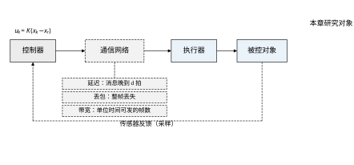
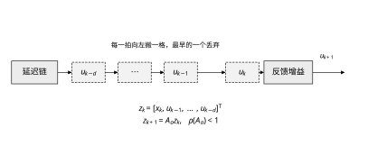
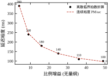
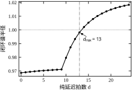
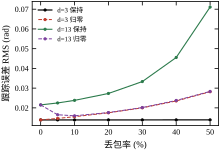
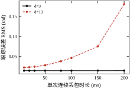
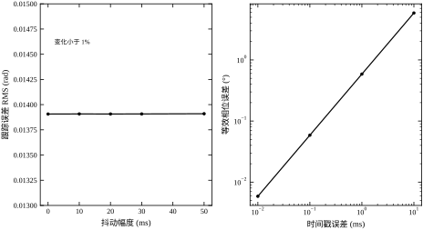
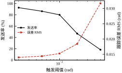
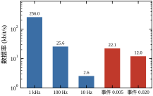
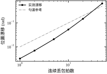

前面各章的回路里，控制器和执行器之间是一根导线：这一拍算出的电压，同一拍就加到电机上。真实系统里这条路径往往要穿过一层网络——现场总线、工业以太网、无线链路，甚至跨厂区的公网。一旦穿过网络，三件事同时变了：消息会晚到（延迟），会不到（丢包），单位时间还只能送有限条（带宽）。这三件事合起来，就是网络化控制系统（networked control system）要处理的问题。
本章不谈网络本身怎么组网，只谈一件事：当控制回路里出现延迟、丢包和带宽约束时，控制器该怎么设计、参数该怎么定、指标会怎么退化。 组网选型、时间同步、故障降级放在 §82.10 统一交代。
为了让每个结论都能落到数字上，本章只用一个对象：一台位置伺服轴，折算到负载侧的传递函数是
G(s)=\frac{1}{s(s+1)} \tag{82-1}
它由一个积分环节和一个时间常数 1 s 的惯性环节串联而成，物理上对应“电机带动一个带阻尼的转动惯量”。控制周期 T_s=10 ms，控制器是带参考前馈的 PD：
u_k=-K\big(x_k-x_{r,k}\big),\qquad K=\begin{bmatrix}k_p & k_d\end{bmatrix}=\begin{bmatrix}25 & 10\end{bmatrix} \tag{82-2}
其中 x_k=[y_k,\ \dot y_k]^{\mathsf T} 是位置与速度，x_{r,k}=[r_k,\ \dot r_k]^{\mathsf T} 是参考及其导数。按连续域算，这套增益给出穿越频率 \omega_c=10.245 rad/s、相位裕度 81.9°。参考取正弦 r(t)=0.5\sin 0.8t，不是阶跃——这一点在后面会反复起作用：阶跃稳态下 u\approx 0，丢包和抖动的实验都会退化成“什么都看不出来”。
网络位置放在控制器与执行器之间，标称纯延迟 d=3 拍，即 30 ms。这个数字不大，一帧以太网报文在交换机里排两次队就能到这个量级。
第一个量是延迟。它不改变增益，只吃掉相位：d 拍延迟在 \omega_c 处贡献 d\,\omega_c T_s 弧度。按标称增益算，d=13 拍时累计相位 13\times 10.245\times 0.01=1.33 rad =76.3°，再加上 PD 本身留的 81.9°，正好把裕度吃光。实跑结果：d\le 13 拍闭环谱半径 \rho<1，d=14 拍 \rho=1.0021 越界；d=13 时的 \rho 是 0.9982，只差 0.2%。换成时间，临界延迟约 140 ms。
第二个量是丢包。丢包不是“少给一点力”，而是“这一拍给的力是错的”。错在哪里，取决于丢包时执行器怎么处理：保持上一拍的值（hold），还是把力矩归零（zero）。这两种策略在标称延迟下差别不大，在临界延迟下会反过来——§82.6 会看到，d=13 且丢包率过半时，归零反而比保持好一倍以上。
第三个量是带宽。一帧状态报文按 32 字节算，1 kHz 周期要 256 kbit/s，10 Hz 只要 2.6 kbit/s。中间那一大段是可以省的，代价是控制性能。事件触发就是拿性能换带宽的标准做法：误差超过阈值才发，\delta=0.020 rad 时发送率降到 46.8%，数据率 12 kbit/s，而跟踪误差从 0.0139 涨到 0.0184，多了三成。

图 82-1 画的是本章的研究对象。要注意反馈通道也可能过网络，但本章只让前向通道过网络：反馈延迟可以用“延迟观测器”补偿，前向延迟没得补——控制量晚到就是晚到，只能提前算。这个不对称是网络化控制与普通延迟系统最大的区别。
延迟这件事，第 47 章已经用 Smith 预估器处理过：模型里串一个 e^{-\tau s}，用模型把延迟“移出”闭环，控制器按无延迟对象设计。那套办法在本章依然有效，前提是延迟已知且恒定。网络延迟恰恰不恒定：它会抖、会跳、会成串地丢。Smith 预估器对模型误差极敏感，延迟估偏 20% 就可能从稳定变成振荡——第 107 章会详细算这笔账。所以本章不用预估器做主线，而是把延迟折算成“还能用多大增益”，用鲁棒性换 simplicity。
增益这件事，第 44 章的 PID 调参已经给了经验公式。本章要补的是：当回路里多出一个 \tau，那些公式里的“响应速度”该往下压多少。本章给出的换算是 \omega_c\tau\le \mathrm{PM}，PM 取 60°–80°，这条式子在第 85、86 章选采样周期时还会再用。
预测这件事，第 58、80 章的 MPC 天然能处理延迟：把延迟拍数塞进预测模型，滚动优化自己会绕开。代价是每个周期解一次优化。本章的定位是“轻量替代”：用一条解析的判据 \rho(A_a)<1 回答“这套增益配这个网络还能不能活”，而不是每次都跑优化。
所以本章的核心问题可以写成三问：这条网络的延迟折成几拍、这套增益能容忍几拍、容忍不了时先动哪个参数。 后面十一节都在回答这三问。
这里要澄清一个常见混淆。教科书上的“计算机控制”讲的是数字化：把连续控制器换成采样控制器，回路里多了一个零阶保持器和一个采样开关。那种情形下，控制器与执行器之间的连接仍然是“确定”的——这一拍算出的数，下一拍一定送到，不早不晚，不丢不改。所以数字化带来的全部后果只有一个：采样周期 T_s 与保持特性，第 84、85 章讲的就是这件事。
网络化多出来的是不确定性。同样是把控制器换成数字的，一旦中间隔了网络，就有三件事不再成立：
三条里最有说服力的是第二条。现场总线的误码率通常在 10^{-9} 以下，一帧报文的丢失概率小到可以忽略；而走商用以太网或无线链路时，10^{-2} 的丢包率是常态——中间差了七个数量级。前面所有章节讨论的“离散系统”，都隐含地假设了这个“1”；本章要处理的是它变成“0.99”以后会发生什么。
三件事还可以统一成一个说法：控制器以为自己在控制的对象，与执行器实际执行的对象，不是同一个。 延迟让执行器执行的是“过期”的命令，丢包让执行器执行的是“别人”的命令，带宽让控制器只能隔几拍才发一次命令。三者都破坏“我算的即它执行的”这个前提，而经典控制理论的全部结论都建立在这个前提上。
这也解释了为什么本章不重新推一套理论，而是把“破坏”量化后塞回原有框架：延迟用增广状态吸收，丢包用两种更新律穷举，带宽用发送率折算。框架没变，变的只是矩阵的维数和更新律的分支——这正是 §82.2 要做的事。
现场最常见的故障不是“设计错了”，而是“设计时没把网络算进去”。典型过程是这样：设备在实验室里用一根短电缆直连，工程师把 k_p 调到 49，响应又快又稳；出厂接到现场总线，延迟 130 ms，一上电就等幅振荡，怎么降增益都压不住，最后把 k_p 砍到 4 才勉强能用，于是抱怨“这台设备性能不如样机”。
用本章的账算一遍，这个结果是可以提前预测的。k_p=49 时 \omega_c=14.37 rad/s，每拍消耗相位 14.37\times0.01=0.1437 rad =8.23°。13 拍延迟累计 107°，而该增益下的相位裕度只有 80.3°（表 82-2）。相位差额 27°，不是“性能下降”，是“必然失稳”。
这个反例还给出一个现场诊断的办法：看振荡频率。本例 \omega_c=10.2 rad/s，对应 1.6 Hz；k_p=49 时 \omega_c=14.4，对应 2.3 Hz。如果现场看到的是 1–3 Hz 的等幅振荡，而且降增益后振幅变小但频率基本不变，那么八成是延迟造成的，而不是机械共振（机械共振的频率通常高一个数量级，且在增益变化时频率会跟着动）。
所以本章的立场可以说得更直白：网络不是导线，它是一个会迟到的执行器。 把它当导线用，设计出来的增益一定偏大，而且偏大的幅度恰好等于“延迟吃掉的相位”所对应的那部分——本例从 k_p=49 砍到 4，差十二倍，带宽从 14.4 掉到 4.0 rad/s。
全章读完后如果只记得三句话，应该是这三句：
第一，延迟按相位记账。 每一拍消耗 \omega_cT_s 弧度，总账不得超过相位裕度。这条换算把“毫秒”翻译成“度”，让不同采样周期、不同增益的系统可以放在同一把尺子上比较。
第二，丢包按时间结构记账。 丢包率是个不完整的指标，真正决定后果的是“连续丢多久”。同等丢包率下，独立丢失几乎无损，成串丢失可以击穿系统。所以要看的是突发长度 L，不是平均值 p。
第三，带宽按交换率记账。 省带宽不是免费的，1 比特带宽对应多少精度损失，可以用 S_\delta 算出来。这条曲线有拐点，拐点之前“几乎白送”，拐点之后“按价收费”，设计的任务就是把工作点放在拐点附近。
三句话分别对应本章的三类公式：相位预算（§82.4）、有效延迟（§82.2.9）、敏感度（§82.7）。后面所有细节都是这三条的展开。
再给一个反例，这次网络本身完全合格，问题出在“这条数据是几点采的”上。
某条线用普通工业以太网，实测 p99 只有 20 ms，按 §82.3 的流程折算 2 拍，d_{\max}=13 拍，怎么看都宽裕，于是增益按 k_p=49 配。上线后系统能跑，但误差里始终有一层缓慢的、幅度约 20 mrad 的起伏，频率比参考信号高一截，而且怎么调增益都压不掉。
查下去发现：控制器和执行器各自用自己的晶振，两端的“当前时间”差约 100 ms，而且这个差在随温度缓慢漂移。100 ms 不是延迟，它是时戳偏差——数据本身 20 ms 就到了，但被打上了错误的时间，控制器以为它是 120 ms 之前的。
按 §82.7.6 的折算，100 ms 在 \omega_c=14.37 rad/s 处吃掉 58.7° 相位，等价于额外 7 拍延迟（58.7/8.23=7.1）。于是有效延迟从 2 拍变成 9 拍，k_p=49 的裕度只有 9 拍（表 82-2），正好踩在临界上。账面上“2 拍对 9 拍”的宽裕，实际是“9 拍对 9 拍”的贴线。
这个反例的教训与第一个不同：第一个是“增益没跟着延迟降”，这个是“延迟没算全”。两者都会表现为低频振荡，但诊断路径不一样：
判别方法：临时改成“只用相对时戳”（§82.10.2 那个不用绝对时间的方案），若振荡立刻减轻，问题在时钟；若一点没变，问题在延迟或增益。这个实验十分钟能做完，比反复调参快得多。
顺带说一句，时戳偏差最难查的原因是它不进任何一条“网络质量”指标：ping 的延迟正常、抓包看时序正常、丢包率为零。它只在“两端的时间对齐”这个问题上出现，而很少有人会去测这个。
网络化控制的数学部分只做一件事：把“消息晚到 d 拍”翻译成“状态多 d 组”，然后用线性系统那套判据处理。翻译完成之后，延迟就不再是特殊现象，只是维数变高。
对象 (82-1) 在零阶保持下可以精确离散，不需要近似：
A_d=\begin{bmatrix}1 & 1-e^{-T_s}\\ 0 & e^{-T_s}\end{bmatrix},\qquad B_d=\begin{bmatrix}T_s-1+e^{-T_s}\\ 1-e^{-T_s}\end{bmatrix} \tag{82-3}
T_s=10 ms 时，e^{-T_s}=0.99005，A_d=\begin{bmatrix}1&0.00995\\0&0.99005\end{bmatrix}，B_d=\begin{bmatrix}4.983\times10^{-5}\\9.95\times10^{-3}\end{bmatrix}。这两个数字值得看一眼：输入对位置的直接作用只有 5\times10^{-5}，比对速度的作用小两百倍。这就是积分环节的离散面貌——这一拍的力矩，要经过很多拍才变成看得见的位置变化。正因为如此，纯延迟 3 拍对位置环的影响远小于对速度环的影响。
“精确”这两个字很重要。如果改用前向欧拉 A_d=I+AT_s，得到的 A_d=\begin{bmatrix}1&0.01\\0&0.99\end{bmatrix} 特征值是 1 和 0.99，与精确值的 0.99005 差 5%，看起来微不足道；但判据要看的是 \rho 与 1 的距离，本例 \rho 在 0.97 附近、距 1 只有 0.03，5% 的特征值误差足以把“稳定”算成“不稳定”。离散化误差不是均匀分布在复平面上的，它集中在靠近 1 的地方，而那里正是稳定性判据最敏感的地方。
设第 k 拍控制器算出 u_k，它要经过 d 拍才被执行器取用，即执行器在第 k 拍用的是 u_{k-d}。定义增广状态
z_k=\begin{bmatrix}x_k\\ u_{k-1}\\ \vdots\\ u_{k-d}\end{bmatrix}\in\mathbb{R}^{2+d} \tag{82-4}
它的演化是
z_{k+1}=\underbrace{\begin{bmatrix} A_d & 0 & \cdots & 0 & -B_dK\\ 1 & 0 & \cdots & 0 & 0\\ 0 & 1 & \cdots & 0 & 0\\ \vdots & & \ddots & & \vdots\\ 0 & \cdots & 0 & 1 & 0 \end{bmatrix}}_{A_a}z_k \tag{82-5}
右下角那一列是“最新算出的 u_k”，它在下一拍变成 u_{k-1}，依次左移，最老的 u_{k-d} 被挤出去。注意 A_a 的第一行同时含 A_d 和 -B_dK：前者是对象自身的演化，后者是延迟了 d 拍才生效的控制。这两块在矩阵里隔了 d 列，正是“晚到”的代数表达。
d=0 是一个必须单独处理的边界。此时 (82-5) 退化不成“两块拼接”，而应直接写成 A_a=A_d-B_dK——延迟为零时控制当拍生效，增广没有意义。实现里若统一按 2(d+1) 维建阵，d=0 会得到一个左上 A_d、右下 -B_dK 互不相连的矩阵，谱半径算出 0.1007，与真值 0.9687 相差近十倍。这个坑在本章代码里踩过一次，值得记下来。

图 82-2 画的是这个“搬格子”的过程。每一拍所有旧命令左移一格，最新算出的 u_k 放进最右端，最老的 u_{k-d} 被挤出去。反馈增益从整条链上取值，所以延迟不是“一个环节”，而是“一串存储单元”。这也解释了为什么延迟会让闭环阶数升高：d 拍延迟把 2 阶系统变成 2+d 阶，多出来的极点全是这些存储单元带来的。
线性系统 (82-5) 渐近稳定的充要条件是
\rho(A_a)=\max_i|\lambda_i(A_a)|<1 \tag{82-6}
没有别的条件，也不需要 Lyapunov 函数——谱半径就是答案。这条判据的好处是可算：给定增益 K 和延迟 d，建一个 (2+d)\times(2+d) 的矩阵，求一次特征值，得到一个数。d=13 时矩阵 15 维，特征值求解在微秒级。于是“这套增益能容忍几拍”变成一次一维扫描：从 d=0 往上加，直到 \rho 越过 1。
坏处也同样明显：它只回答“稳定/不稳定”，不回答“离不稳定还有多远”。\rho=0.9982 与 \rho=1.0021 在判据上是天壤之别，在工程上却是同一件事——前者意味着误差衰减时间常数约 570 拍（5.7 s），后者意味着缓慢发散，两者都不好用。所以本章在 \rho 之外还要看跟踪误差 RMS，两个指标一起用。
丢包改变的是“执行器这一拍用哪个值”。两种最常见的策略写成
u_k^{\mathrm{arr}}=\begin{cases} u_{k-1}^{\mathrm{arr}}, & \text{保持（hold）}\\[2pt] 0, & \text{归零（zero）} \end{cases} \tag{82-7}
保持策略的直觉是“没收到新命令就维持原状”，归零策略的直觉是“没收到命令就不许动”。前者在延迟小时几乎无损：d=3 时无论丢包率 0 还是 50%，实测 RMS 恒为 0.0139，一点没变。原因是保持的值只比新值旧几拍，而对象本身时间常数 1 s，几拍的差别可以忽略。
后者在延迟小时明显更差：同样 d=3，丢包率从 0 涨到 50%，RMS 从 0.0139 涨到 0.0281，翻了一倍。力矩归零等于每隔几拍就松一次手，速度跟着抖。但在 d=13 时结论反过来：保持策略的 RMS 从 0.0215 涨到 0.0685，归零只有 0.0284。因为此时“保持”保持的是一个采样时刻已经过期 130 ms 的命令，它不但没用，还在往错误方向推；归零至少不会推错。这条反转是本章最实用的结论之一。
随机丢包最常见的近似是“平均系统”：把丢包看成在每个周期以概率 p 切换到开环，于是
A_{\mathrm{avg}}=(1-p)A_{cl}+pA_{op},\qquad A_{cl}=A_d-B_dK,\quad A_{op}=A_d \tag{82-8}
判据仍是 \rho(A_{\mathrm{avg}})<1。本例算出来：p=0 时 0.9687，p=0.2 时 0.9625，p=0.4 时 0.9649，p=0.8 时 0.9851，p=1 时正好 1.0000。也就是说，这个判据给出的临界丢包率是 100%——它说“全丢光才失稳”，等于什么都没说。
原因不难找：A_{op}=A_d 的特征值是 1 和 0.99，本身就在单位圆上（积分环节），所以只要 p<1，平均矩阵就被拉回圆内一点点。平均操作把“每一拍都在赌”抹成了“平均下来还行”，而真实系统的失稳来自连续几拍的开环累积，不来自平均值。所以本章不用平均判据做结论，只用它做对照：当平均判据与蒙特卡洛结果差得远时，说明该系统对丢包的时序结构敏感，必须看突发长度，不能只看丢包率。 这个观点在第 53 章的鲁棒分析里会再次出现。
周期发送的带宽占用是常数：f_s 赫兹乘每帧字节数。事件触发把它变成变量：
\text{发送条件：}\ |r_k-y_k|>\delta,\qquad R=f_{\mathrm{send}}\,B_{\mathrm{pkt}}\times 8 \tag{82-9}
32 字节一帧，f_{\mathrm{send}}=1 kHz 时 R=256 kbit/s。\delta=0.020 rad 时实测发送率 46.8%，R=12.0 kbit/s，降了 21 倍；\delta=0.005 时发送率 86.3%，R=22.1 kbit/s。注意发送率不是随 \delta 线性下降：\delta 从 0.002 加到 0.010，发送率只从 92.7% 降到 80.0%；从 0.010 加到 0.020，一下掉到 46.8%。因为参考幅值只有 0.5 rad，\delta=0.010 已经相当于 2% 的幅值，误差很少超过它。
事件触发的代价不是均匀的。\delta=0.020 时 RMS 从 0.0139 涨到 0.0184（+32%），\delta=0.050 时涨到 0.0316（+127%）。前一段是“省带宽几乎不花钱”，后一段是“省钱买到明显退化”。这条曲线的拐点在 \delta\approx 0.02，恰好是参考幅值的 4%。
网络送来的不只是数据，还有“这个数据是什么时候采的”。如果两端时钟差 \Delta t，控制量就相当于在错误的时间点被使用，折算成相位误差是
\Delta\varphi=\omega_c\,\Delta t \tag{82-10}
\omega_c=10.245 rad/s 时，\Delta t=1 ms 对应 0.59°，10 ms 对应 5.87°，100 ms 就是 58.7°——接近把裕度吃光。所以时间同步的精度要求可以直接从相位裕度反推：想让时戳误差只占 1° 相位，\Delta t 要小于 1.7 ms；想占 0.1°，要小于 0.17 ms。这个换算比“我们需要微秒级同步”这种口号有用得多。
最后是漂移。连续丢包 L 拍期间，执行器保持旧力矩，位置会按当时的速度继续走，一阶估计是
\Delta y\approx v\,L\,T_s \tag{82-11}
速度 1.0 rad/s、L=50 拍（500 ms）时估 0.5 rad，实测 0.6507 rad，比估计大三成。原因在于丢包期间力矩不但没刹车，还在继续加速——真实漂移是“匀速项 + 加速项”，一阶估计只算了前一项。这个偏差方向是低估，工程上做安全包络时要按 1.3 倍留余量。
\rho<1 只说了“会收敛”，没说“多久”。离散谱半径与连续衰减率之间的换算是 z=e^{sT_s} 取模：
\sigma=\frac{\ln\rho}{T_s},\qquad \tau_c=-\frac{T_s}{\ln\rho} \tag{82-12}
\sigma 的单位是 1/s，\tau_c 是误差衰减到 1/e 所需的时间，也等于 -\ln\rho 的倒数那么多拍。代进本章的数：
三个数放在一起看，谱半径那 3% 的差别被放大了近 17 倍：0.9698 到 0.9982 只差 0.028，收敛时间却从 33 拍变成 555 拍。原因是对数在 1 附近极其平坦，\rho 越接近 1，\ln\rho 塌得越快。这条换算纠正了一个常见误解——“\rho=0.998 也是稳定，问题不大”。它确实稳定，但它要 5.6 s 才能把扰动压掉 63%，一个 6 s 的仿真窗口里根本看不出衰减，实际表现与“慢慢发散”几乎无法区分。
还有一层要提醒：\rho 只约束最终的衰减速率，不约束瞬态。A_a 是高度非正规的矩阵——下方一条移位带、右上角一块输入通道，特征向量之间接近平行。这种矩阵的幂 \|A_a^k\| 可以先涨几倍再落下来。所以看仿真结果时不能只看 \rho，还要看 \max|y|：本章算例在 d=3 时 \max|y|=0.507，而参考幅值是 0.5，说明几乎没有瞬态放大；换成增益更大或延迟更靠近临界的配置，这个数会明显超过参考幅值，那才是“稳定但不好用”。
延迟和丢包看起来是两件事，落到“执行器这一拍用的是几拍前的命令”上却是同一件事。定义有效延迟
d_{\mathrm{eff}}=d+L \tag{82-13}
d 是常态延迟，L 是当前已经连续丢失的拍数。保持策略下，执行器拿的正是 d+L 拍前发出的那一帧，所以突发丢包完全等价于延迟临时增加 L 拍。
这个等价关系解释了一批看起来矛盾的数据。d=3、连丢 L=20 拍时，RMS 仍是 0.0140，与不丢包时的 0.0139 几乎相同——因为有效延迟只到 23 拍，而 d_{\max}=13 是“稳态判据”的上界，短暂越过它不等于发散，20 拍的时间太短，扰动还没长起来。同一组 L=20 放到 d=13 上，RMS 就冲到 0.1808：此时有效延迟 33 拍，越过临界 20 拍，而且起点本来就在临界线上，没有任何缓冲。
所以“会不会出事”取决于两个量的乘积，而不是任一个：越过临界的幅度（d+L-d_{\max}）与越界持续的时间（L）。前者决定扰动长得快不快，后者决定它有没有时间长起来。这与 §82.6 的仿真结论完全一致，也是 §82.3 要求测量“每 0.5 s 最多连丢几帧”而不是只报丢包率的理论依据。
归零策略不满足 (82-13)：它把命令改成 0，而不是取更旧的一帧，所以不是“延迟变大”，而是“输入被换成了另一个信号”。这就是为什么 d=13 时归零反而更好——它把系统从“用错方向的旧命令”里解救出来，代价只是短暂失去控制。两种策略的差别无法用有效延迟统一描述，必须分开仿真。
真实延迟很少正好是采样周期的整数倍。130 ms 配 10 ms 周期是运气好，多数现场是 127 ms 或 133 ms。增广矩阵只能接受整数 d，所以要先把非整数部分处理掉。三种做法：
向上取整（保守）。 127/10=12.7 取 13。代价是最多浪费 0.3 拍（3 ms）的裕度，好处是判据永远不会偏乐观。本章全程用这一种，因为它的误差方向确定，最坏情况可算。
向下取整（乐观）。 取 12，把剩下的 7 ms 当作扰动。只有在已经确认系统有 20% 以上余量时才可以用，否则等于自己骗自己。
分数延迟建模。 把 0.7 拍拆成一个一阶全通或 Farrow 滤波器，串在增广模型里，A_a 的维数增加 1–2 维。精度最高，但滤波器本身引入额外相位，抵消一部分收益。工程上只在“延迟稳定但关键”的场合用，比如半导体设备的精密台。
三种做法在本例上差别不大：12.7 拍取 13，与取 12 相比，\rho 分别是 0.9982 与 0.9933，都在稳定侧，但前者离 1 更近。若延迟是 13.9 拍，取整的差别就致命了——13 稳定、14 失稳（§82.5.2），此时必须用分数延迟建模，或者干脆改采样周期让比值落到整数附近。
最后一条经验：设计阶段就把采样周期选成“延迟的约数附近”。若延迟稳定在 130 ms 左右，取 T_s=10 ms 得 13 拍；取 T_s=13 ms 得 10 拍，虽然拍数少了，但每拍的相位消耗 \omega_cT_s 变大，总相位不变。所以采样周期的选择不影响物理裕度，只影响取整误差与计算规模——这一点第 85 章会从另一个角度再讲一次。
谱半径回答“k\to\infty 时误差往哪走”，不回答“接下来十拍会发生什么”。要回答后者，得看增广矩阵的最大奇异值 \bar\sigma(A_a)。
本章两个算例给出一组反直觉的数：d=3 时 \rho=0.9698，d=13 时 \rho=0.9982，而两者的 \bar\sigma(A_a) 都是 1.422，一位小数都不差。同一条延迟链、同一组增益，奇异值对延迟几乎没有感觉，谱半径却从 0.97 挪到了临界边缘。
原因在矩阵结构。\bar\sigma 的量级主要由输入通道 B_dK 的范数决定——它衡量“一拍之内控制量能把状态推多远”；延迟链只是把这一列往后挪了位置，不改变它的大小。特征值的位置则要由整条链的相位累积决定，延迟每多一拍就多转一点。所以两个量测的根本不是同一件事：\bar\sigma 量的是“一拍能放多大”，\rho 量的是“长期能放多大”。
本例 \bar\sigma=1.422>1 而 \rho<1，意味着存在某个初始状态，让误差在前几拍涨 42%，之后才被特征值慢慢拉回来。这不是数值噪声，是真实的瞬态——在现场表现为“扰动来了先鼓一下再收”，鼓的那一下幅值大于稳态误差，很容易被误判成“系统要发散了”，而实际上它只是非正规矩阵在还债。
所以判据要用两个数一起读。\bar\sigma 与 \rho 的比值本身就是“不正规程度”的一个粗指标：本例 d=3 时 1.47、d=13 时 1.42，都属中等，谱半径的结论可以直接用；比值到 3 以上就要小心，到 5 以上时谱半径只能当必要条件，瞬态必须靠时域仿真确认。这个比值的物理含义在 §82.5.7 还会以特征向量条件数 \kappa(V) 的形式出现一次，两者是同一件事的两种度量。
这一节把前面两节的东西排成一条可执行的流程。之所以要排流程，是因为网络化控制最常见的失败不是“算错了”，而是顺序错了：先调好增益，再发现网络延迟超标，于是回头降增益，降完发现带宽又不够，再回头改发送策略。每一轮都要重跑全部实验。按下面的顺序走，可以把这个循环压缩到一次。
不要用“平均延迟”做设计。延迟的分布是长尾的：绝大多数报文 2–3 ms 到，偶尔一帧排到 40 ms。平均值会被大量小延迟拉低，看起来很好，但控制器真正怕的是那个 40 ms 的尾巴。要量的是：
这几项里，前两项直接进设计公式，后两项只影响验收指标的余量。工程上最容易被忽略的是第二项：交换机在拥塞时会成串丢包，而实验室里用随机数生成的丢包是独立的，两者在同一个丢包率下表现完全不同。
测量本身有几个讲究，做错了量出来的数不能用。
第一，时间戳必须打在同一侧。 如果发送端打一次戳、接收端再打一次，量到的是“两端时钟差 + 网络延迟”，前者可能比后者大一个数量级。要么两端都跑 PTP 做同步（§82.10.2），要么在接收端用“序号 + 本地时钟”只算相邻两帧的间隔变化——后者测不出绝对延迟，但能测出抖动，对本章的抖动实验够用。
第二，样本量要够。 p99 意味着 1% 的尾部，要让它稳定，至少要有 100 倍的样本，即一万帧以上；p99.9 要十万帧。按 100 Hz 采样算，一万帧是 100 s，十万帧是 17 分钟。只测 30 秒就报 p99，等于在噪声里挑数。
第三，必须覆盖最坏时段。 网络的拥塞是时段性的：上班时间带宽被占满，夜班空闲。只测夜班的 p99 会得到 10 ms，白天实际是 130 ms，差一个数量级。正确做法是把测量拉满一个完整生产周期，或者在已知的拥塞时段单独测一遍。
第四，突发要主动构造。 独立丢包是抓不到的，因为真实网络里的丢包本来就成串。要测突发，得在控制流旁边加一条背景流（比如用大文件传输把交换机队列填满），让控制报文真的排到队尾被丢，这样量出来的 L 才是现场会遇到的 L。
第五，记录原始数据，不只记录统计量。 平均延迟和 p99 都是压缩过的信息，一旦后期发现设计要改，原始序列还能重新算分位数、重算突发长度；只存统计量就得回去重测。
拿到 p99 延迟 \tau_{99}，按控制周期折算：
d=\left\lceil \frac{\tau_{99}}{T_s}\right\rceil \tag{82-14}
向上取整而不是四舍五入，因为少算一拍的代价是不稳定，多算一拍的代价只是保守。\tau_{99}=130 ms、T_s=10 ms 时 d=13；若把 T_s 提到 20 ms，d 变成 7，看起来“压力小了”，实际上时间没变——判据最终要折回毫秒去比，拍数只是中间量。这一点在第 85 章选采样周期时还会强调：提高采样率不会减少延迟，只会让延迟的拍数变多。
向上取整还会带来一个隐性代价：如果实际延迟恰好在 131 ms，T_s=10 ms 时会算成 14 拍（140 ms），凭空多了 9 ms 的保守量。T_s 越小，这个量化误差越小，但拍数越多、增广矩阵越大。折中的经验是让 d 落在 5–20 拍之间：少于 5 拍说明采样太慢（对象动态被漏掉），多于 20 拍说明增广矩阵的维数已经不值得用解析判据，该换 Smith 或 MPC 了。
常规设计是先给增益、再验裕度。有延迟时应该反过来：裕度是硬约束，增益是它的函数。由延迟吃掉的相位等于 \omega_c\tau，要求它不超过可用裕度，就得到
\omega_c\le\frac{\mathrm{PM}}{\tau} \tag{82-15}
\tau=140 ms、希望留 80° 裕度时，\omega_c\le 9.97 rad/s；希望留 60°，\omega_c\le 7.5 rad/s。本例取了 10.245 rad/s，对应实际裕度 81.9°，踩在线上。
得到 \omega_c 之后，再回推增益。对 G=1/[s(s+1)] 与 PD，|L(j\omega_c)|=1 给出
\sqrt{k_p^2+k_d^2\omega_c^2}=\omega_c\sqrt{1+\omega_c^2} \tag{82-16}
取 k_d=2\sqrt{k_p}（阻尼比 1 的常规取法），当 \omega_c\gg1 时左端近似 2\omega_c\sqrt{k_p}、右端近似 \omega_c^2，解出
k_p\approx\frac{\omega_c^2}{4} \tag{82-17}
\omega_c=10.245 时 k_p\approx26.2，取整到 25，误差 5%。这就是表 82-2 里 k_p=4/9/16/25/36/49 对应 \omega_c=4.00/6.10/8.17/10.24/12.31/14.37 的来源——反过来看，\omega_c\approx2\sqrt{k_p}，k_p 翻四倍 \omega_c 翻一倍，表里 25→49 是 1.96 倍、10.24→14.37 是 1.40 倍，正是这个平方根关系（1.40^2=1.96）。注意 \omega_c 的涨速比 k_p 慢，是因为分子里的 k_d\omega_c 项随 \omega_c 增长，把增益抬得比比例更快。
这条路的顺序很重要：先有 \tau，才有 \omega_c 的上限，才有 k_p。如果先按无延迟把 k_p 调到 49，得到 \omega_c=14.37，再发现网络延迟 140 ms，此时 \omega_c\tau=2.01 rad =115°，怎么都救不回来，只能推倒重来。
丢包策略不是“哪个好选哪个”，而是由延迟决定的。本章数据给出一条可操作的界线：
理由在 §82.2.4 已经说过，这里补一句工程上的判断依据：保持的值过期多久，等价于把有效延迟从 d 拉长到 d+L。只要 d+L 还在 d_{\max} 内，保持就是免费的；一旦越界，保持就变成“用错误方向持续激励”。所以真正的判据不是丢包率，而是 d+L 与 d_{\max} 的关系。
这也是为什么本章要单独做突发丢包实验：平均丢包率 5% 在独立假设下只对应偶尔单丢，在突发假设下可能是每 0.5 s 连丢 5 拍，后者直接把 d+L 推到 18 拍，越过 13 拍的红线。
事件触发的阈值可以按参考幅值定：\delta 取幅值的 2%–4%。本例幅值 0.5 rad，\delta=0.010–0.020，对应发送率 80.0%–46.8%，RMS 增加 10%–32%。这个区间是“省带宽还不太疼”的部分。
带宽预算要按最坏情况留：事件触发的发送率是随机变量，平均值 86.3% 不意味着不会出现连续 20 拍都发送的情况。工程上按平均值的 1.5 倍配带宽，或者给一个令牌桶限速，超限时强制丢弃并由保持策略兜底。
五步走完，用一张表验收。表 82-1 是本章算例的实测值，可以直接当模板。
表 82-1 网络化控制回路的验收项与本章实测值
| 验收项 | 判据 | 本章实测 | 结论 |
|---|---|---|---|
| 标称延迟稳定性 | \rho(A_a)<1 | 0.9698（d=3） | 通过 |
| 最坏延迟稳定性 | \rho(A_a)<1 | 0.9982（d=13） | 勉强 |
| 延迟裕度 | \ge p99 延迟的 1.2 倍 | 140 ms vs 130 ms | 通过 |
| 跟踪误差 | 无延迟值的 1.5 倍以内 | 0.0139 vs 0.0139 | 通过 |
| 50% 丢包 | 不失稳、RMS 增幅 <3 倍 | 0.0281（2.0 倍） | 通过 |
| 突发 20 拍 | 不失稳 | 0.1808，未失稳 | 通过 |
| 时戳误差 | 相位 <5° | 1 ms → 0.59° | 通过 |
| 数据率 | 链路预算的 70% 以内 | 12.0 kbit/s | 通过 |
这张表里最值得看的是第二行与第六行：d=13 的 \rho=0.9982 虽然“通过”，但衰减时间常数 5.7 s，任何一次额外的 1 拍延迟都会让它翻红；突发 20 拍在 d=13 下 RMS 已经到 0.1808，是标称值的 13 倍，虽然没失稳，但已经不能叫“能用”。判据通过不等于系统好用，这是本章要反复提醒的一点。
把本章算例当成一个项目，从头走一遍，可以看清每一步的输入输出到底是什么。
第一步的输出是一张网络画像：p50 延迟 30 ms、p99 延迟 130 ms、平均丢包 1%、每 0.5 s 最多连丢 5 帧、抖动峰峰值 ±2 拍、两端时钟差小于 1 ms。这六个数不是算出来的，是测出来的；测不准，后面四步全是空转。
第二步把 p99 折成拍数：130/10=13 拍，正好是 d_{\max}。这一步已经暴露出风险——设计点与临界点重合，意味着这个回路没有最坏情况余量。如果第一步量出 p99 是 300 ms，折成 30 拍，远超 13 拍，那么第二步的结论不是“继续往下走”，而是“停下来，改网络或降增益”，因为后面的步骤救不了它。
第三步定增益。若按 p99 = 130 ms 设计，\omega_c\le 1.429/0.13=11.0 rad/s；取 10.245 留一点余量，k_p\approx26，落到 25。若 p99 是 300 ms，\omega_c\le 4.76 rad/s，k_p\approx5.7，只能取 4；而 k_p=4 的延迟裕度是 390 ms（表 82-2），刚好覆盖 300 ms。对比这两个结果：延迟从 130 ms 涨到 300 ms，k_p 从 25 掉到 4，带宽从 10.2 掉到 4.0 rad/s。延迟翻 2.3 倍，带宽掉 2.6 倍，这与 (82-26) 的平方反比关系一致——性能的代价是按延迟的平方付的，不是按一次方。
第四步选策略。d=3<6.5，选保持；同时给一条保险：连续丢包超过 6 拍就切归零。这条保险在 d=3 时几乎不会触发（实测连丢 20 拍 RMS 才 0.0140），但它把“未知的长突发”挡在了外面。
第五步定阈值与带宽。\delta=0.015（幅值的 3%）落在“省带宽不太疼”的区间；按发送率 60%、每帧 32 字节算，R=0.6\times100\times32\times8=15.4 kbit/s，再乘 1.5 的余量，链路预算按 23 kbit/s 报。
五步走完，回头再看表 82-1，会发现所有验收项都能追到某一步的输出：\rho 来自第二步的 d 与第三步的 K，RMS 来自第四、五步的策略，数据率来自第五步的 \delta。验收不是再算一遍，而是核对五步之间的输入输出有没有接错。
五步的产物应该落在一页纸上，跟着控制器一起交付。下面这份模板按本章算例填好，可以直接抄结构。九行，缺一行就说明有一件事没定。
第一行，对象与工况：G(s)=1/[s(s+1)]，行程 ±1 rad，最大速度 1 rad/s，最大加速度 2 rad/s²，负载惯量变化 ±10%。
第二行，采样与控制律：T_s=10 ms，k_p=25、k_d=10，位置与速度均取自编码器差分，参考项带 \dot r 前馈。
第三行，网络画像：p50 30 ms、p99 130 ms、平均丢包 1%、每 0.5 s 最多连丢 5 帧、抖动 ±2 拍、时钟差 <1 ms。这一行必须写清测量时段——白天的 p99 与夜班差一倍是常事。
第四行，折算与判据：d=13 拍，\rho=0.9982，衰减时间常数 5.7 s，\bar\sigma=1.422。前三行是算出来的，第四行才是判断。
第五行，裕度声明：p99 延迟折算 130 ms 对 140 ms 的设计极限，余量 7.7%；增益若按 p50 设计可到 49，但那是违规的——这条要写出来，防止后人“优化”。
第六行，丢包策略：d\le6 时保持，连丢超过 6 拍切归零，阈值随 d 按 d_{\max}-d 重算。
第七行，降级与恢复：四级动作、触发阈值、恢复条件（见 §82.10.6）。
第八行，验收数据：表 82-1 的九项，附仿真脚本的提交号与随机种子。不写种子，验收就不可复现。
第九行，复测周期：网络变更、控制周期变更、负载变更后必须重测；无变更时每季度抽测一次 p99。
这九行里最容易漏的是第五行与第九行。前者漏了，后人会拿 p50 去“优化”增益，把余量吃光；后者漏了，系统会在某次网络扩容后悄悄变成临界状态——扩容通常意味着加设备、加流量，p99 只会变差，不会变好。
先看连续域。连续域的价值不在于“更准”——它其实更不准——而在于能给出闭式的量级估计。工程上做第一轮判断时，没人愿意先建一个 15 维矩阵求特征值；大家想知道的是“我这个带宽配这个延迟，大概还剩多少裕度”。
纯延迟的频域表达式是 e^{-j\omega\tau}。它的模恒为 1，相角是 -\omega\tau。这两个事实决定了它在回路里的角色：它不会让开环增益曲线上下移动，只会让相位曲线一路往下掉。 所以延迟对稳定性的影响完全通过相位裕度体现，而不通过增益裕度。
这一点与惯性环节形成对照。时间常数 1 s 的惯性环节在 \omega=1 处既衰减 3 dB 又滞后 45°；延迟在 \omega=1、\tau=0.14 s 处不衰减半分贝，却滞后 8°。延迟是“纯相位消耗品”，而相位是有限资源：PD 控制器攒下来的裕度，被延迟一分一分吃掉。
设无延迟时开环 L(j\omega) 在穿越频率 \omega_c 处的相位裕度是 PM，即
\angle L(j\omega_c)=-180°+\mathrm{PM} \tag{82-18}
串入延迟后相位再减 \omega_c\tau。临界稳定发生在总相位正好 -180° 时，于是
\tau_m=\frac{\mathrm{PM}}{\omega_c} \tag{82-19}
这就是延迟裕度公式。它只有一行，但把三件事锁在一起：带宽越高，能容忍的延迟越短；裕度越大，能容忍的延迟越长；两者之比就是答案。 本例 PM =81.9°=1.429 rad，\omega_c=10.245，\tau_m=1.429/10.245=0.1395 s =139.5 ms。
这条式子还解释了为什么“提高采样率”不能解决延迟问题。采样率提高，\omega_c 不变（它由增益和对象决定），\tau_m 也就不变。变的只是延迟折成的拍数——从 13 拍变成 130 拍，增广矩阵从 15 维变成 132 维，计算量涨十倍，物理裕度一寸没多。
把 k_p 从 4 扫到 49（k_d=2\sqrt{k_p}），连续公式与离散判据的结果并列在表 82-2。离散那一列按“最后仍稳定的拍数 +1”折算，因此是临界延迟的上界，真实临界值落在它下方一个采样周期之内。
表 82-2 不同增益下的延迟裕度：连续公式与离散判据
| k_p | k_d | \omega_c (rad/s) | PM (°) | 连续裕度 (ms) | 离散 d_{\max} (拍) | 折算 (ms) |
|---|---|---|---|---|---|---|
| 4 | 4 | 4.00 | 90.0 | 393 | 38 | 390 |
| 9 | 6 | 6.10 | 85.5 | 245 | 23 | 240 |
| 16 | 8 | 8.17 | 83.2 | 178 | 17 | 180 |
| 25 | 10 | 10.24 | 81.9 | 139 | 13 | 140 |
| 36 | 12 | 12.31 | 80.9 | 115 | 10 | 110 |
| 49 | 14 | 14.37 | 80.3 | 97 | 9 | 100 |
这张表最值得注意的是两列的接近程度，而不是它们的数值。两条完全不同的路——一条在频域算相位，一条在时域求特征值——给出的答案只差半个到一个采样周期，说明这个算例里离散化引入的额外相位还不到 ZOH 半拍的量。原因在 §82.4.6 会说。
另一个值得注意的地方是 PM 几乎不随增益变：从 90.0° 降到 80.3°，只降了 10°。这是 k_d=2\sqrt{k_p} 这个取法的结果——它让阻尼比固定为 1，相位曲线在穿越点附近的形状不随增益改变。换句话说，表里的裕度变化几乎全部来自 \omega_c 的变化，而不是来自 PM 的变化。这也解释了为什么 \tau_m 大致按 1/\omega_c 走：k_p 翻四倍，\omega_c 涨 2.4 倍，\tau_m 掉到 40%。

图 82-3 把这张表画成两条线。两条线贴得很紧，只有 k_p=36 那一处看得出来——这正是本节想传达的：在 T_s 足够小时，连续公式够用，不必每次都建增广矩阵。 但“足够小”是有条件的，条件在下一小节。
要在连续域里做代数运算（比如把延迟并入传递函数、画根轨迹），必须把 e^{-\tau s} 有理化。最常用的一阶 Padé 是
e^{-\tau s}\approx\frac{1-\tau s/2}{1+\tau s/2} \tag{82-20}
它的相位是 -2\arctan(\omega\tau/2)，与真值 -\omega\tau 的偏差随 \omega\tau 增大而增大。在 \omega_c\tau=1.43 处，真值滞后 81.9°，Padé 只给 2\arctan(0.715)=71.2°，少算 10.7°。少算相位意味着偏乐观：按 Padé 设计会以为还有 10° 余量，实际已经贴线。
偏差的方向是固定的——Padé 永远低估滞后，因为 \arctan x<x。所以用它做保守设计时要手动补一个修正：把 \tau 放大 1.1–1.2 倍再代入。本例 \omega_c\tau=1.43 属于“偏大”的区域（一阶 Padé 的常用适用区间是 \omega\tau<1），要更准就得上二阶 Padé，代价是传递函数多一个零点一对极点，手算基本做不动。
把偏差量化成一条经验线：\omega_c\tau\le 0.5 时，一阶 Padé 的相位误差约 2%，连续公式给出的 \tau_m 误差也在同量级；\omega_c\tau=1 时误差 7%；\omega_c\tau=1.5 时误差 13%；到 \omega_c\tau=2 时误差超过 20%，连续估计只能当“数量级参考”。
本例 \omega_c\tau_m=1.43——注意这个乘积在临界点上不是任意的，它等于 PM。所以上面的经验线可以翻译成一句更直接的话：PM 在 30°–60° 时连续公式好用，PM 超过 80° 时它开始偏乐观。 本例 PM =81.9°，正好在最不保险的区间。它给出的 139.5 ms 落在离散判据的夹逼区间 (130,140) ms 之内，两者一致；但这是“落在同一格”的一致，不是逐位吻合，不能反过来用连续值去校准离散判据。
连续模型里没有采样，离散模型里有一个 ZOH 和一次采样。这两件事各贡献多少相位？
ZOH 等效于半个采样的纯延迟，即 T_s/2=5 ms，在 \omega_c 处折合 0.051 rad =2.9°。采样本身不额外贡献相位，但它把连续信号“阶梯化”，等效于在回路里插入一个 \mathrm{sinc} 形状的低通，在 \omega_c T_s=0.1 处衰减不到 1%、相位滞后不到 1°。两项加起来约 3°，折算成延迟约 5 ms。
表 82-2 里 k_p=25 时连续值 139 ms 落在 (130,140) 之内，k_p=36 时连续值 115 ms 却比上界 110 ms 还高 5 ms——这一处正好暴露了 §82.4.5 说的“偏乐观”：PM 在 80° 附近时，连续公式会把裕度多算一个 ZOH 半拍的量。所以“重合”的准确说法是：\omega_cT_s=0.1 时两者只差半个到一个采样周期，而这一格之差恰好是 ZOH 的 3° 滞后造成的，扣除它之后两边就对齐了。若 T_s=100 ms，\omega_cT_s=1，ZOH 的滞后就是 29°，连续公式会乐观一个数量级，此时必须用离散判据。
连续域最实用的产出不是 \tau_m 这个数，而是一张相位预算表。名义相位裕度 81.9° 听起来很宽裕，但它是“所有消耗项都为零”时的余额；把每一项按实际工况扣掉，剩下的才是真裕度。
按每拍 5.87° 折算，逐项扣减：
五项加起来 42.9°，81.9° 扣完只剩 39.0°。这个数才是标称工况下真正能用来“抗意外”的余量。
再看最坏工况，把 d 换成 p99 的 13 拍：
扣完只剩 -8.0°，也就是负数。这与 §82.5.2 的 \rho=0.9982 完全对得上：判据说“勉强稳定”，预算表说“已经透支”。两者不矛盾——判据用的是标称模型，预算表把模型误差这种“判据看不见的项”也算进去了。判据告诉你数学上还活着，预算表告诉你工程上已经不该这么用。
这张表还有一个用法：倒推哪一项值得花钱。本例里最大的一项是延迟（76.3°），其次是抖动与模型误差（各约 10°）。所以改善顺序仍然是“先修网络”——把 p99 从 130 ms 压到 60 ms，直接省回 41°；而把模型误差从 10% 压到 5%，只省 5°。这就是 §82.11.4 那条判别顺序的量化依据。
连续法的价值在于可以手算。拿本章的 k_p=25、k_d=10 走一遍，五步：
第一步，写开环。 L(s)=(25+10s)/[s(s+1)]。
第二步，找穿越频率。 令 |L(j\omega)|=1，即 \sqrt{625+100\omega^2}=\omega\sqrt{1+\omega^2}。两边平方得 625+100\omega^2=\omega^2+\omega^4，即 \omega^4-99\omega^2-625=0，解出 \omega^2=105.0、\omega_c=10.245 rad/s。
第三步，读该处相位。 \angle L=\arctan(10\omega_c/25)-90°-\arctan(\omega_c)。三项分别是 76.3°、-90°、-84.4°，合计 -98.1°。
第四步，算裕度。 \mathrm{PM}=180°-98.1°=81.9°，与仿真给出的值一致。
第五步，折成时间。 \tau_m=81.9°\times\pi/180/10.245=139.5 ms。
五步里只有第二步稍麻烦，但它可以退化成解 \omega^2 的二次方程——因为 L 里只有 s 的一次项，模平方后只剩 \omega^2 的偶次项。这个便利来自“对象二阶 + 控制器一阶”的结构，几乎所有“电机 + PD”的组合都满足。
手算的价值不只是省一次仿真，更在于它揭示了各参数的进入方式：\omega_c 由 k_p、k_d 共同决定，相位由 \omega_c 决定，延迟裕度是两者之比。所以调 k_d 会同时动 \omega_c 和相位，效果不如调 k_p 直观——这也是为什么表 82-2 固定 k_d=2\sqrt{k_p}，把两个自由度压成一个。
要注意的是：这套手算只在“没有采样”时成立。加了 T_s=10 ms 后，ZOH 会额外贡献 3° 滞后（§82.4.6），手算的 81.9° 实际只剩 78.9°，对应的 \tau_m 从 139.5 ms 降到 134 ms。这与离散判据给出的 130–140 ms 区间吻合。手算负责量级，离散判据负责结论，分工到这里就清楚了。
要把延迟并入传递函数做代数运算（根轨迹、Routh 判据、频域整形），必须先把它有理化，最常用的是 (82-20) 的一阶 Padé。这一小节算清楚它的代价，因为很多人把它当“够用的近似”，而它在临界附近并不够用。
一阶 Padé 的相位是 -2\arctan(\omega\tau/2)，精确延迟的相位是 -\omega\tau。两者在 \omega\tau 小时接近，在 \omega\tau\approx1.3 时已经分家。本章 \omega_c=10.245 rad/s、\tau=130 ms，\omega_c\tau=1.332：
9° 听起来不大，但它落在“还剩多少”这个数上：真实 PM 81.9° 扣掉延迟后只剩 5.6°，Padé 却告诉你还剩 14.6°。用 Padé 反解临界延迟，得到 \tau=169 ms，即 16.9 拍；而真值是 139.5 ms（13.95 拍）。一阶 Padé 把临界延迟高估了 21%，也就是 3 拍。 用这个数去设计，控制器会在 14 拍时就已经失稳，而设计单上写着“还有 3 拍余量”。
二阶 Padé 就好得多。它的相位是 -2\arctan\!\big(6\omega\tau/(12-(\omega\tau)^2)\big)，在 \omega\tau=1.332 处给出 -1.326 rad，与精确值只差 0.3°；用它反解临界延迟得 140.2 ms，与真值 139.5 ms 差 0.5%。所以结论很明确：做代数推导可以用 Padé，但至少用二阶；一阶只配用来估量级。
还有一处更要紧：Padé 是有理函数，它的极点在左半平面，所以“Padé + 对象”做 Routh 判据永远给不出“延迟导致的失稳”这个机制——它只会告诉你某个极点穿过了虚轴，不会告诉你穿过的原因是相位绕了一圈。要在连续域里看清延迟失稳的机理，只有两条路：用 e^{-\tau s} 做精确频域分析（本章 §82.4 的做法），或者转到离散域（§82.5）。
§82.4.8 是一次具体的算术，但同一套推导对任意 (k_p,k_d) 都成立，可以写成闭式。令 |L(j\omega)|=1：
k_p^2+k_d^2\omega^2=\omega^2(1+\omega^2)\;\Longrightarrow\;\omega^4+(1-k_d^2)\omega^2-k_p^2=0
解出
\omega_c^2=\frac{(k_d^2-1)+\sqrt{(k_d^2-1)^2+4k_p^2}}{2}
相位裕度则是三项相角之和的补角：
\mathrm{PM}=90°+\arctan\!\frac{k_d\omega_c}{k_p}-\arctan\omega_c
代入 k_p=25、k_d=10：\omega_c^2=(99+\sqrt{9801+2500})/2=104.95，\omega_c=10.245；\mathrm{PM}=90°+76.3°-84.4°=81.9°，与 §82.4.8 完全一致。再除一次就得到 \tau_m=139.5 ms。
这两行的价值在于可以扫。把 k_p 从 1 扫到 100、k_d 取 2\sqrt{k_p}，一百个点不到一毫秒就算完，而同样的扫描若走仿真，要跑一百次 6 s 的闭环。所以连续域的正确用法不是“代替离散判据”，而是在离散判据之前先粗筛：先用上面两式找三五个候选增益，再对这几个候选建增广矩阵。本章表 82-2 的六行就是这么来的，最后用离散判据确认，两边差不到一拍。
公式也有失效边界：它假设对象是严格的 1/[s(s+1)]、控制器是理想 PD、没有采样。三个假设破一个，\omega_c 就会偏；偏得最多的是“理想 PD”——真实微分带一阶滤波，在 \omega_c 处补的相位不是 90° 而是 90°-\arctan(\omega_c/\omega_f)。若滤波截止 \omega_f=5\omega_c，补的相位少 11.3°，PM 从 81.9° 掉到 70.6°，裕度从 139.5 ms 掉到 120 ms。这就是为什么设计时不能照着“理想 PD”的公式取满，要留出微分滤波的相位损失。
连续域给量级，离散域给答案。这一节把 d 从 0 扫到 24，看谱半径怎么走、特征值怎么转、临界点为什么落在 13 而不是按相位算出来的 13.9。
按 (82-5)，d 拍延迟的增广矩阵是 (2+d)\times(2+d)。d=3 时 5 维，d=13 时 15 维，d=24 时 26 维。这个规模对特征值求解完全不是负担：15 维矩阵的 QR 迭代在微秒级完成，即使把 d 扫到 400 拍，总耗时也远小于一次仿真。
规模小带来一个额外好处：可以把 \rho(d) 当成一条曲线整体看，而不是只算一个点。 工程上真正有用的信息往往在曲线的形状里——它是平的、缓升的，还是突然跳的，决定了系统对延迟不确定性的敏感程度。
表 82-3 摘了 10 个点，完整曲线在图 82-4。
表 82-3 标称增益下闭环谱半径随纯延迟拍数的变化
| d (拍) | 0 | 3 | 5 | 8 | 9 | 10 | 12 | 13 | 14 | 20 |
|---|---|---|---|---|---|---|---|---|---|---|
| \rho | 0.9687 | 0.9698 | 0.9703 | 0.9710 | 0.9712 | 0.9797 | 0.9933 | 0.9982 | 1.0021 | 1.0148 |
曲线分三段。d\le 9 时几乎水平，从 0.9687 只爬到 0.9712，涨了 0.25%；d=10 起开始抬头，每拍涨 0.007 左右；d=14 越过 1 之后仍在涨，但涨速放缓，到 d=24 是 1.0183。
三段对应三种机制。第一段里，延迟的作用被闭环的强反馈压住了——d 拍之前的命令虽然旧，但 k_p=25、k_d=10 的增益足够大，旧命令与新命令差别不大。第二段里，延迟累计的相位开始逼近临界，主导特征值从实轴转向单位圆附近，\rho 快速上升。第三段里，系统已经失稳，\rho 由“最不稳的那个模态”决定，而这个模态的增长率随 d 变化很慢，所以曲线又变平。

按相位算，可用的相位是 81.9°，每拍消耗 \omega_cT_s=10.245\times0.01=0.10245 rad =5.87°，81.9/5.87=13.95 拍。判据给的是 13 拍，比相位估计少不到一拍。
差的那不到一拍，来源是 ZOH 的半个采样。把 ZOH 看成 T_s/2 的纯延迟，等效拍数从 d 变成 d+0.5，于是 13.95-0.5=13.45，再考虑采样保持带来的幅值衰减，落在 13 与 14 之间。判据只能取整，取 13。
这个“不到一拍”的差别在工程上有实际意义：如果按相位估计把延迟预算定成 13.9 拍（139 ms），系统实际会在 13 拍后（130 ms）就进入临界。取整要向下，余量要向上，这是本章反复强调的同一条原则的两个侧面。
\rho 只给模，不给位置。要看机制，得看特征值本身。
d=0 时闭环只有两个特征值，都是正实数：0.9687 与 0.9207。它们的差别来自两个模态——0.9687 是“积分环节 + 位置反馈”这一支，慢；0.9207 是“速度反馈”这一支，快。\rho 取大的那个，所以无延迟时 \rho=0.9687。
d=13 时矩阵变成 15 维，特征值变成 15 个，大部分散落在单位圆内（模最大 0.9718），主导的是一对共轭复根：
\lambda=0.9927\pm0.1043j,\qquad |\lambda|=0.9982,\qquad \angle\lambda=\pm6.0° \tag{82-21}
d=14 时这对根变成 0.9971\pm0.0999j，模 1.0021，相角 5.7°。
这组数字里有两个关键事实。第一，相角只有 6°，而且几乎不随延迟变（13 拍时 6.0°，14 拍时 5.7°）。6° 对应 0.105 rad/拍，除以 T_s 得 10.5 rad/s，正是穿越频率 \omega_c。也就是说，主导模态始终在穿越频率附近振荡，延迟没有改变它的频率。
第二，延迟改变的是模，不是相角。13 拍把模从 0.9687 推到 0.9982，14 拍推到 1.0021。所以“失稳”在这里表现为“穿越频率处的振荡不再衰减”，而不是“振荡频率突然变了”。这一点与“延迟吃相位”的说法并不矛盾：吃掉的 76° 相位（13\times5.87°）体现为闭环阻尼的下降，而阻尼下降在离散域就是特征值模上升。
那 76° 去哪了？它在其余 13 个特征值上。延迟链把 d 个“旧命令”塞进状态，每个都对应一个近似在原点的特征值，它们绕成一圈，把 76° 的相位差分摊掉了。所以看单个特征值的相角看不出延迟，必须看整组。
这也解释了为什么 \rho 在 d=10 才开始抬头：模随相位的变化不是线性的，它在接近 1 时最敏感。前 9 拍里模从 0.9687 涨到 0.9712，只涨了 0.25%；后 4 拍里从 0.9712 涨到 1.0021，涨了 3.2%，是前 9 拍的十三倍。
在临界点附近，\rho 对 d 的斜率是每拍 0.004 左右（d=13 的 0.9982 到 d=14 的 1.0021）。这个斜率说明两件事。
第一，判据在临界点附近的分辨力很差。\rho 从 0.998 到 1.002 只差 0.4%，但对应“稳定”与“不稳定”两个完全不同的结论。任何数值误差——离散化、浮点、模型偏差——都能把结论翻过来。所以实际设计不能踩在 \rho=1 上，要留 5%–10% 的余量，即 \rho\le 0.90–0.95。
第二，延迟的不确定性要按拍算，不能按毫秒算。延迟从 130 ms 涨到 140 ms，看起来只多了 10 ms（7.7%），但折算成拍数是 13→14，判据从稳定变不稳定。也就是说，网络延迟的量化误差比它的相对误差更致命。这一点在设计阶段就要写进预算：给延迟留余量，宁可多留一拍，不要多留 5 ms。
把 d 从 0 扫到 400，每次建矩阵求特征值，Python 下总耗时约 0.6 s。这个代价允许做一件连续公式做不到的事：把“不确定延迟”直接扫成一张表，而不是用一个上界代替全部。表 82-2 的六行就是这么来的，如果换成解析推导，六组增益要手算六次。
代价的另一面是它依赖模型。增广矩阵里的 A_d、B_d 必须与真实对象一致，模型偏 10%，d_{\max} 可能偏两三拍。所以离散判据给出的 13 拍是“模型意义下的 13 拍”，工程上还要再打一个折扣，折扣大小取决于模型精度——这与第 81 章全驱系统对模型失配的敏感是同一类问题。
特征值对矩阵扰动的敏感度不是 1:1。标准结论是
|\Delta\lambda|\le \kappa(V)\,\|\Delta A\| \tag{82-22}
其中 V 是特征向量矩阵，\kappa(V)=\|V\|\,\|V^{-1}\| 是它的条件数。对正规矩阵（比如对称阵）\kappa(V)=1，特征值误差不超过矩阵误差；对本章的 A_a，\kappa(V) 可以大到几十甚至上百。
原因看结构就明白：A_a 下方是一条单位移位带，右上角只有一个非零块。这类“伴矩阵”的特征向量高度倾斜，几乎平行，V 接近奇异。d 越大，倾斜越严重——每多一个移位块，就多一个近乎重合的方向。
这条不等式有两个工程推论。
第一，\rho 的数值不可全信，但“\rho 是否小于 1”这个判断在远离临界时可信。 模型误差 10% 时，\|\Delta A_a\| 的量级是 0.1；若 \kappa(V)=30，|\Delta\lambda| 可达 3，这个界太松，没有实用价值。但实际误差远小于这个上界，因为模型误差不是任意方向的扰动，它集中在 A_d 的两个元素上。所以实践中的做法是：只信 \rho<0.95 的“稳定”结论与 \rho>1.05 的“不稳定”结论，中间那一条带要留仿真验证。
第二，非正规性同时解释了瞬态放大。 §82.2.8 说过 \|A_a^k\| 可以先涨后落，原因就是特征向量倾斜：不同模态在初始时刻几乎同向叠加，衰减快的先落，慢的还在，中间会出现一个“看起来发散”的阶段。本章算例的 \max|y|=0.507 只比参考幅值大 1.4%，说明这个系统虽然非正规，但倾斜程度还不算恶劣；延迟再大、增益再高，这个比例会明显上升。
这两条合起来是一句提醒：谱半径是一张二维地图，而真实的闭环住在高维空间里。 用它做快速筛选很好用，用它做最终判决不够。
判据只能给整数拍，但真实临界点在两个整数之间。用线性插值可以把它捞出来：
d_{\mathrm{cr}}\approx d_0+\frac{\rho(d_0)-1}{\rho(d_0)-\rho(d_0+1)} \tag{82-23}
本章 d_0=13，\rho(13)=0.9982，\rho(14)=1.0021，代入得
d_{\mathrm{cr}}\approx 13+\frac{1-0.9982}{1.0021-0.9982}=13+\frac{0.0018}{0.0039}=13.46
即 134.6 ms。这个数与 §82.5.3 用相位算出的“13.95 减去 ZOH 半拍 = 13.45”几乎完全一致（差 0.01 拍），两条完全不同的路径在同一处会合，说明这两个数都是对的。
插值的价值在于把“13 还是 14”这个二选一变成了一个连续量。工程上需要的是这个连续量：延迟预算是 134 ms 还是 140 ms，直接决定要不要换网线、要不要加一级缓冲。整数拍只够做定性判断。
插值也有边界。\rho(d) 在临界点附近不是严格线性的，二阶项会让插值偏一点；离临界越远，线性化误差越大。所以只在 |\rho-1|<0.01 的窗口内用，超出就多算一两个点再插。本例两点跨度只有 0.0039，落在窗口内，插值可信。
还有一个反过来的用法：用插值后的临界值去校准相位法。相位法给出 13.95 拍，扣半拍 ZOH 给 13.45，插值给 13.46——三者一致到小数点后一位。如果换个对象后相位法与插值差出 0.3 拍以上，说明 ZOH 的等效延迟不再是半拍（比如用了非零阶保持，或采样不等间隔），此时必须以离散判据为准。
\rho 只取了模最大的那一个，剩下的 14 个（d=13 时）被丢掉了。它们其实携带了关于“延迟链怎么衰减”的信息，值得单独看一眼。
d=3 时，五个特征值是 0.9698（实）、0.8588（实）、0.6514（实），以及一对共轭复根 -0.245\pm0.348\mathrm{j}（模 0.426）；只有三个的模小于 0.1。d=13 时，主导的是一对共轭复根 0.9927\pm0.1043\mathrm{j}（模正好 0.9982），次主导是实根 0.9718，再往下是一对 0.7427\pm0.4694\mathrm{j}，其余 13 个的模全部小于 0.1。
三件事从这个分布里读出来。
第一，主导模态是什么形状，闭环就是什么形状。 d=3 的主导是实根，所以收敛是单调的，误差一路衰减不回摆；d=13 的主导是复根，所以收敛带振荡。复根的角度 0.1043 rad/拍 换成周期是 2\pi/0.1043=60 拍，即 0.6 s，也就是 1.7 Hz。这个数不是算出来的巧合：临界延迟下的失稳本来就是“绕一圈正好补上相位”，一圈的时间由延迟长度决定，13 拍延迟自然给出几十拍的振荡周期。§82.1.5 里现场看到的 1–3 Hz 振荡，机理与此相同。
第二，延迟链的记忆只有十来拍。 d=13 时有 13 个特征值的模小于 0.1，意思是“13 拍以前的命令，其影响每拍衰减十倍，几拍之后就没了”。所以“延迟 13 拍”不等于“13 拍的信息同等重要”，而是“最近七八拍有效，更早的已经可以截断”。这给了一个工程上的近似：增广矩阵的维数可以截到 8–10 拍，代价是 \rho 的第三位小数会变，结论不变。延迟很大（比如 100 拍）时，这个截断是把维数压下来的唯一实用手段。
第三，实根与复根的比例决定了“能不能看出来”。 d=3 时误差单调衰减，示波器上是一条平滑收敛的曲线，很容易被当成“没有问题”；d=13 时误差带 1.7 Hz 纹波，纹波的幅值随 \rho 缓慢变化，容易被当成“机械共振”。同一个判据、两种波形，这是现场诊断时最容易混淆的一处：看到纹波先查 \rho 与延迟，再查机械。
这一小节的结论都来自实际写代码时踩过的坑，与理论无关，但每一条都会影响结果的正确性。
第一，只求特征值，不求特征向量。 判据只需要模最大的那个特征值，np.linalg.eigvals 比 eig 快近一倍，而且避开了特征向量带来的数值麻烦。麻烦有多大？本章 d=13 时，特征向量矩阵的条件数在数值上报到 10^{17} 量级，d=3 时也有 10^{12}——因为 13 个特征值挤在原点附近，其中几个接近重根。这个数不能当“不正规程度”来读（那是 §82.2.11 的 \bar\sigma/\rho=1.42 干的事），但它确实说明 §82.5.7 那条 |\Delta\lambda|\le\kappa(V)\|\Delta A\| 的不等式在实际数值上宽得没用：\kappa 一大，上界就成了天文数字。所以那条不等式只能当“临界附近别全信 \rho”的定性提醒。
第二，扫描时不要重建对象矩阵。 disc() 与增益无关，每次循环只需重建移位带那一部分；本章把 d 扫到 400 拍只用 0.6 s，就是因为对象的两行两列只算了一次。若连 A_d、B_d 一起重建，耗时会翻几倍，虽然仍可接受，但没有必要。
第三，不要用幂迭代求谱半径。 幂迭代只在“主特征值是实数且唯一”时收敛。本章 d=13 的主导是一对共轭复根 0.9927\pm0.1043\mathrm{j}，实向量迭代会在两个方向之间来回跳，模收敛到 0.9982 但符号永远不稳；若只看相邻两次迭代的比值，会得到 0.99 到 1.01 之间的抖动，正好落在判据最敏感的那一段。要么用 eigvals 一次算全，要么用带位移的反迭代。延迟系统的谱半径问题里，复根是常态而不是例外，这一点与“对象是过阻尼、主导极点必为实根”的直觉相反。
三条合起来是一句话：判据本身只有一行代码，出错的地方全在“怎么调库”和“怎么解读算出来的数”上。
判据回答“能不能活”，性能回答“活得好不好”。这一节用三组实验把两个层面分开：确定性延迟看判据（§82.6.1），随机丢包看统计（§82.6.2–82.6.3），突发丢包看时序结构（§82.6.4）。所有性能数字都是 t\ge 2 s 窗口内的跟踪误差 RMS，参考 0.5\sin 0.8t，无延迟无丢包时是 0.0139 rad。
同一个系统，在网络化语境下有三套稳定性口径，结论可以完全不同。
确定性延迟下的稳定性：延迟固定为 d 拍，\rho(A_a)<1 即稳定。本例 d\le 13 稳定。这是最强的结论，也是最容易验证的结论。
随机丢包下的稳定性：每个周期以概率 p 丢包，要求“以概率 1 有界”或“均方稳定”。这比确定性情形弱得多：系统可能在某些丢包序列下发散，但在概率意义下几乎必然有界。严格判据要解 Lyapunov 方程或做马尔可夫跳变分析，本章用蒙特卡洛代替。
突发丢包下的稳定性：丢包不是独立事件，而是成串出现，长度 L 有限。此时系统在突发期间等效于“延迟从 d 变成 d+L”，只要 d+L<d_{\max} 就稳定。
三套口径的差别不在数学，而在对丢包时序的假设。工程上最危险的是用第二套（独立丢包）去设计、却遇到第三套（突发丢包）的现场。本章的实验设计就是为了把这个差别量化出来。这个视角与第 53 章的鲁棒分析同源：不确定性不是标量，它有结构。
表 82-4 是 120 次蒙特卡洛的中位数，两种延迟、两种策略、七个丢包率。
表 82-4 随机丢包下的跟踪误差 RMS（rad，120 次中位数）
| 丢包率 p | d=3 保持 | d=3 归零 | d=13 保持 | d=13 归零 |
|---|---|---|---|---|
| 0 | 0.0139 | 0.0139 | 0.0215 | 0.0215 |
| 0.05 | 0.0139 | 0.0147 | 0.0225 | 0.0165 |
| 0.10 | 0.0139 | 0.0155 | 0.0238 | 0.0160 |
| 0.20 | 0.0139 | 0.0175 | 0.0274 | 0.0176 |
| 0.30 | 0.0139 | 0.0200 | 0.0334 | 0.0202 |
| 0.40 | 0.0139 | 0.0235 | 0.0444 | 0.0237 |
| 0.50 | 0.0139 | 0.0281 | 0.0685 | 0.0284 |
四列数据讲了两件事。
第一，d=3 时保持策略的 RMS 是一条水平线，从 p=0 到 p=0.5 四位有效数字全不变。归零策略则从 0.0139 单调涨到 0.0281，翻了一倍。这个对比说明：延迟小时，丢包本身并不伤害性能，伤害性能的是丢包后如何处置。保持的值只比新值旧几拍，几乎等价于没丢；归零则每丢一次就相当于把力矩掐断几拍，速度跟着抖。
第二，d=13 时两条曲线交叉。保持从 0.0215 涨到 0.0685（3.2 倍），归零从 0.0215 先降到 0.0160 再涨到 0.0284。归零在 p=0.1 处有一个最低点，之后才回升——因为中等丢包率下“偶尔松一次手”反而打断了延迟带来的持续错推。

图 82-5 把四列画在一起。图中最醒目的是两条“保持”曲线在 d=3 时重合于一条水平线，以及 d=13 时两族曲线在 p\approx0.05 附近交叉。
交叉的机制可以用一句不等式概括：
d_{\mathrm{eff}}=\begin{cases} d, & \text{归零}\\ d+L, & \text{保持} \end{cases} \tag{82-24}
保持策略的有效延迟不是 d，而是 d+L——保持的每一拍都在把旧命令继续往后用。所以判据应该写成 d+L<d_{\max}：只要这个不等式成立，保持免费；一旦破坏，保持就在“用过期命令持续激励”。
d=3、单次丢包 L=1 时 d_{\mathrm{eff}}=4\ll 13，保持无损；d=13、丢包率 50% 时平均连续丢包长度约 2 拍，d_{\mathrm{eff}}=15>13，保持开始变差，而归零的 d_{\mathrm{eff}} 仍是 13，只是频繁松手——两害相权，归零更轻。
这条不等式还给出一个混合策略：正常情况下保持，连续丢包计数超过 d_{\max}-d 时切归零。它把两种策略的优点拼在一起：短突发用保持，几乎免费；长突发用归零，避免拿过期命令持续错推。代价是要在控制器里维护一个丢包计数器，而且切换阈值本身要随 d 调整。
表 82-5 是每 0.5 s 连丢 L 拍的结果，30 次中位数。
表 82-5 突发丢包下的跟踪误差 RMS（rad，30 次中位数）
| 连续丢包 L (拍) | 1 | 2 | 3 | 5 | 8 | 10 | 15 | 20 |
|---|---|---|---|---|---|---|---|---|
| 时长 (ms) | 10 | 20 | 30 | 50 | 80 | 100 | 150 | 200 |
| d=3 保持 | 0.0139 | 0.0139 | 0.0139 | 0.0139 | 0.0139 | 0.0139 | 0.0139 | 0.0140 |
| d=13 保持 | 0.0219 | 0.0226 | 0.0238 | 0.0273 | 0.0372 | 0.0455 | 0.0747 | 0.1808 |
d=3 那一行几乎完全平：连丢 200 ms 也只有 0.0140。d=13 那一行从 0.0219 单调涨到 0.1808，八倍多，而且在 L=15 之后加速——L=15 时 0.0747，L=20 时 0.1808，五拍之内涨了 1.4 倍。
两条线的差别用 (82-24) 一读就明白：d=3 时 d+L 最大 23 拍，按说已经越过 13 拍的红线，为什么没坏？因为 L 只持续一小段，之后有 0.5 s 的正常控制把误差拉回来。d=13 时本来就贴着红线，L=1 就已经越过，之后每一拍都在红线外累积，恢复时间又不够。

图 82-6 的横轴是单次丢包时长而不是丢包率，这是本节想强调的第二个口径问题：同样的 4% 丢包率，独立丢失和每 0.5 s 连丢 20 拍（4%）在这张图上是两个完全不同的点。 前者对应 d=3 行的最左端，后者对应 d=13 行的最右端，差 13 倍。
三个口径必须先说清楚，否则数字没法比。
第一，RMS 只统计 t\ge 2 s。前 2 s 含初始瞬态，参考从零起步、状态从零起步，误差里混着“还没跟上”的成分，与稳态性能无关。
第二，失稳判据是 |y|>2 rad。参考幅值 0.5 rad，2 rad 是四倍幅值，越过它基本可以断定发散。本章所有实验都没有触发这条线，包括 d=13、50% 丢包、连丢 20 拍——说明这个算例的稳定边界比性能边界宽得多：先坏的是精度，不是稳定性。
第三，表格取中位数而不是均值。30 次实验里只要有两次进入慢发散，均值就被拉高一个数量级，而中位数反映“典型情况”。这与工程验收的习惯一致：关心的是“绝大多数时候怎么样”，不是“最坏那一次有多坏”。最坏情况另有指标，就是上面那条 2 rad 的线。
§82.2.5 算过平均系统判据：p=0.8 时 \rho=0.9851，仍判定稳定；p=1 时才到 1.0000。蒙特卡洛则显示 d=13、p=0.5 时保持策略的 RMS 已经涨了 3.2 倍。
两者不矛盾，但用途完全不同。平均判据回答“长期平均意义下会不会发散”，答案是“几乎不会”；蒙特卡洛回答“典型运行下精度退化多少”，答案是“退化到三倍”。工程上真正关心的是后者。所以本章把平均判据放在 §82.2.5 当“反例”讲，而不是当设计工具用。
如果一定要用解析判据，正确做法是跳变线性系统的共同 Lyapunov 函数：找一个 P\succ0 使得 A_{cl}^{\mathsf T}PA_{cl}\prec P 且 A_{op}^{\mathsf T}PA_{op}\prec P 同时成立。第二个条件等价于 A_{op} 本身稳定，而本例 A_{op}=A_d 的特征值有一个正好是 1（积分环节），所以共同 Lyapunov 函数不存在，这个系统在任意非零丢包率下都不是“对任意丢包序列稳定”。它只是“对绝大多数丢包序列实用稳定”。这个区分在第 53 章讲鲁棒稳定性时会展开。
本章所有 RMS 都拿 0.0139 作参照，这个数不是仿真的偶然结果，它可以解析算出来，值得验一次——验过了，后面所有“涨了几倍”才有着落。
无延迟、无丢包时，闭环误差传递函数是
\frac{E(s)}{R(s)}=\frac{s(s+1)}{s^2+(1+k_d)s+k_p}
在参考频率 \omega=0.8 rad/s 处取模。分子：|j0.8(1+j0.8)|=0.8\times1.2806=1.0245。分母是 s^2+11s+25 在 s=j0.8 处的值，即 -0.64+j8.8+25=24.36+j8.8，模为 25.90。于是 |E/R|=1.0245/25.90=0.03956。
参考是 0.5\sin0.8t，幅值 0.5，所以稳态误差幅值 0.5\times0.03956=0.01978。正弦的 RMS 是幅值除以 \sqrt2，得 0.01399。仿真给 0.01391，差 0.6%，差的那一点来自离散化与 t\ge2 s 窗口没取整周期。
这个验算有三个用处。第一，它把“基线”钉死了——0.0139 不是“跑出来的某个数”，而是 k_p、k_d、参考频率三者的确定函数。第二，它说明了 RMS 主要由跟踪滞后决定，而不是由噪声或数值误差决定，所以比较不同网络配置时，比的其实是“网络让滞后增加了多少”。第三，它给出了增益的代价：把 k_p 降到 4，同一公式给出 |E/R|=0.196，RMS 基线涨到 0.069，是原来的五倍。这印证了 §82.3.7 那条“性能的代价按延迟的平方付”为什么会落在精度指标上。
顺带一个观察：d=13 时的基线是 0.0215，比 0.0139 高 55%。这部分不是丢包造成的，纯粹是延迟本身——13 拍延迟在 0.8 rad/s 处贡献 0.104 rad =6° 的附加相位，闭环在参考频率处的增益随之上升。所以看表 82-4 时要把这两部分分开：行与行之间的差是丢包，第一列与 0.0139 的差是延迟。
表 82-4 与表 82-5 都是“多次实验取中位数”，那么中位数本身有多稳？换一批种子，小数点后第几位会变？这个问题不回答，读者就没法判断“0.0685 与 0.0747 哪个大”这类比较有没有意义。
做一次直接的检验：固定 d=3、p=0.2、保持策略，只换随机种子跑十次。十次的 RMS 是 0.01391、0.01391、0.01390、0.01391……十个数在第五位小数上才有差别，标准差 3\times10^{-6}，还不到均值的万分之二。远离临界时，一次仿真就够，随机性几乎不存在。
同样十次，换成 d=13、p=0.2、保持策略：0.0284、0.0277、0.0260、0.0258、0.0268、0.0264、0.0263、0.0283、0.0295、0.0268。均值 0.0272、标准差 0.0012，极差 0.0037——最坏与最好差 14%，第一位小数就变了（0.026 与 0.030）。这与表 82-4 的 0.0274 落在同一区间内，但单次实验完全可能给出 0.026 或 0.030。
两个数放在一起，说明了那张表该怎么读：
这也解释了为什么表 82-4 用 120 次、表 82-5 只用 30 次：前者的目的是分辨“0.0215 与 0.0225”这种 5% 的差，后者只用来定位“从哪一拍开始陡增”，粗一点没关系。实验次数应该由要分辨的最小差别决定，而不是由机器闲不闲决定。
最后一个反直觉的点：临界附近的散布不是“随机噪声变大”，而是系统本身把微小的种子差异放大了。d=3 时 \rho=0.9698，扰动在 6.6 拍内衰减到三分之一，两次实验的差异很快被抹平；d=13 时 \rho=0.9982，衰减时间常数 5.7 s，整个 6 s 的仿真窗口里扰动几乎没有衰减，初始几拍的偶然差异会一直留到最后。散布大小本身就是“离临界多远”的一个间接指标，这比算 \rho 更容易在现场做：同一工况跑十次，看结果的极差。
仿真代码里同时记了 RMS 和 \max|e|，很多人只报前者。其实这两个数之比本身就是一条自检线。
固定参考 0.5\sin 0.8t、无网络，六组增益下的数据是：k_p=4 时 0.0982/0.0688=1.43；k_p=9 时 0.0509/0.0356=1.43；k_p=16 时 0.0302/0.0212=1.42；k_p=25 时 0.0198/0.0139=1.42；k_p=36 时 0.0139/0.0098=1.42；k_p=49 时 0.0103/0.0072=1.43。六组全部落在 1.42–1.43。
这不是巧合。正弦量的峰值与 RMS 之比恒为 \sqrt2=1.414；误差是正弦的线性函数，仍然是正弦，所以比值不变。换句话说，1.42 说明“误差纯粹是正弦稳态误差”，没有任何别的成分混进来。
这条性质可以当自检用：任何一组仿真，只要 \max|e|/\mathrm{RMS} 明显偏离 1.43，就说明误差里混进了非正弦成分，常见的三种——
三种情况的比值方向不同，正好可以用来分辨。这也解释了为什么本章所有 RMS 表都不单独列峰值：RMS 回答“平均多差”，峰值与它的比回答“差得干不干净”，后者是一个诊断量，不是一个性能量。
这一节把网络参数逐个拆开，回答两个问题：它进到哪个公式里，以及它动一点会让哪个指标动多少。为了让“动多少”可比，定义一个归一化敏感度：
S_x=\frac{\Delta J/J}{\Delta x/x} \tag{82-25}
J 是指标（\rho、RMS 或数据率），x 是参数，S_x 的含义是“参数变化 1%，指标变化百分之几”。|S_x|>1 说明指标对参数过敏，调参时必须先锁定；|S_x|<0.2 说明可以粗调。
本章涉及七个参数，它们进入设计的方式各不相同：
注意“进不进判据”这一列比数值更重要。不进的参数只能靠仿真评估，进不去的参数不管怎么调都不会让系统失稳——这两类参数在调试时的处理方式完全不同。
d 的敏感度最高。\rho 在临界点附近每拍涨 0.004，相对变化 0.4%；但性能的退化快得多：d=0 时 RMS 0.0139，d=13 时 0.0215，涨了 55%。也就是说，延迟从 0 加到 130 ms，稳定性指标只掉了 3%，性能指标掉了 55%。
这就是为什么不能只看 \rho。\rho 在 0.97–1.00 之间几乎“看不出变化”，而实际跟踪精度已经掉了一半。工程的正确读法是：用 \rho 判断“能不能活”，用 RMS 判断“值不值得活”，两个都要看。
d 的另一个特点是不可控。采样周期可以改、增益可以调、丢包策略可以换，唯独网络延迟由交换机、协议栈、无线信道决定，控制器无能为力。所以 d 只能“测量 + 预留”，不能“优化”。这也解释了为什么本章把 d 放在设计流程的第一步：它是约束，不是变量。
p 的敏感度依赖于策略，不能给一个数。d=3 时保持策略的 S_p\approx0（RMS 完全不随 p 变），归零策略在 p=0.5 处 S_p\approx0.6；d=13 时保持策略的 S_p 在 p=0.5 处升到 1.2，归零只有 0.3。
这组数字说明：丢包率本身不是设计参数，它与延迟、策略构成三元组。 单说“我的网络丢包 5%”没有意义，必须说“5% 的独立丢包、标称延迟 3 拍”，才能判断要不要动。
工程上常见的错误是把丢包率当成服务质量指标写进合同，然后按它验收。按本章数据，同样 5% 的丢包率，独立丢包 + 保持策略的性能损失是 0，突发丢包 + 临界延迟的性能损失是 55%。合同里应该写的是“99.9% 的报文延迟小于 30 ms、连续丢包不超过 2 帧”，而不是“平均丢包率小于 1%”。
L 是七个参数里唯一能让 RMS 涨一个数量级的：d=13 时 L 从 1 涨到 20，RMS 从 0.0219 涨到 0.1808，八倍。其他参数最多让 RMS 翻一倍。
原因在 (82-24)：L 直接加到有效延迟上，而有效延迟是判据的自变量。p 只改变“多久丢一次”，L 改变“丢的时候有多糟”。前者是频率，后者是幅度，而系统的非线性（\rho 在临界点附近陡升）放大了幅度的影响。
所以调参的优先级很清楚：先保 L，再保 p。 如果链路只能保证一个指标，保证“不连丢”比保证“少丢”更值钱。实现上，这对应交换机的队列管理策略——给控制报文高优先级、限制单队列长度、开启风暴抑制，都是为了让 L 有上界。
抖动让每一拍的延迟在 d 附近随机波动。直觉上它应该有害，实测却几乎为零：\pm0、\pm1、\pm2、\pm3、\pm5 拍的 RMS 全是 0.0139，四位有效数字不变。
原因在 \rho(d) 的形状：d 从 1 到 9，\rho 只从 0.9691 涨到 0.9712。抖动 \pm5 拍只是在 0.97 这个平台上左右移动，指标当然不动。换句话说，抖动之所以无害，是因为系统在这个区间本来就有大量余量。
这个结论不能推广。若标称延迟是 13 拍，抖动 \pm5 就会把 d 推到 18 拍，\rho 从 0.998 涨到 1.012，直接失稳。所以“抖动无害”的正确表述是：抖动无害，当且仅当 d+J<d_{\max}。 这与保持策略的判据是同一条不等式，只是把 L 换成 J。
时戳误差不改变延迟，只改变“这条数据对应哪个时刻”。它的作用是让控制量在错误的时间点被使用，折算成相位就是 (82-10)。\Delta t=1 ms 对应 0.59°，10 ms 对应 5.87°，100 ms 对应 58.7°。
图 82-7 右边是这条折算的半对数曲线，左边是抖动的影响。两张子图放在一起，是为了对比两种“时间不确定性”的不同命运：抖动几十毫秒都不影响精度，时戳偏 10 ms 就吃掉 6° 相位。差别不在幅度，而在是否有偏：抖动只在 d 附近来回，落在 \rho(d) 的平坦段里；时戳偏差是一个恒定的、每拍都同向的相位损失，它直接从未被平均掉的裕度里扣。

这条区别对工程有直接指导：校准时钟比减小抖动更重要。 抖动要靠实时以太网、硬件打戳来压，成本高；时戳偏差只要两端跑同一个 PTP 域就能压到微秒级，成本低。花同样的钱，先解决偏差。
\delta 是唯一一个“可以自由调、且调了立刻见效”的参数。它把带宽和精度连成一条曲线：\delta=0.005 时发送率 86.3%、RMS 0.0144；\delta=0.020 时 46.8%、0.0184；\delta=0.050 时 18.3%、0.0316。
用 (82-25) 算交换率：\delta 从 0.005 到 0.020（4 倍），带宽降到 54%，RMS 涨 28%，S_\delta\approx0.12；从 0.020 到 0.050（2.5 倍），带宽降到 39%，RMS 涨 72%，S_\delta\approx0.79。前半段是“几乎白送”，后半段开始“按价收费”。 拐点在 0.02 附近，与参考幅值的 4% 对应。
表 82-6 把七个参数的敏感度汇总。
表 82-6 网络参数对各项指标的影响汇总
| 参数 | 典型值（本例） | 主要影响 | 归一化敏感度 | 可调性 |
|---|---|---|---|---|
| 采样周期 T_s | 10 ms | 决定 d、增广维数 | 中（换 T_s 等于换 d） | 可调 |
| 延迟 d | 3 拍（标称）/13 拍（p99） | \rho、RMS | 高（性能 55%） | 不可调，只能测 |
| 丢包率 p | 0–50% | RMS，取决于策略 | 中（0–1.2） | 部分可调（重传） |
| 突发长度 L | 1–20 拍 | RMS 可涨 8 倍 | 高 | 靠队列管理限上界 |
| 抖动 J | \pm3 拍 | 本文无影响 | 低（d+J<d_{\max} 时） | 靠实时以太网 |
| 时戳误差 \Delta t | 1 ms | 相位 0.59° | 中（线性） | 可调（PTP） |
| 事件阈值 \delta | 0.02 rad | 带宽、RMS | 0.12（小 \delta）/0.79（大 \delta） | 自由可调 |
这张表可以直接当调参顺序用：先锁定不可调的 d，再限制 L，再选 \delta，最后校 \Delta t。
七个参数各管一段，读起来很累。能不能用两个无量纲数把它们概括起来？试一下。
第一个是裕度占用率，定义为延迟消耗的相位占相位裕度的比例，它等于延迟拍数除以临界拍数：
\kappa=\frac{d}{d_{\max}}=\frac{\omega_c dT_s}{\mathrm{PM}}
第二个是越界倍数，把突发也算进去：
\Lambda=\frac{d+L}{d_{\max}}
用这两个数重读本章的数据：标称工况 \kappa=3/13=0.23，RMS 0.0139；最坏工况 \kappa=13/13=1.00，RMS 0.0215。d=13 那一行突发实验对应 \Lambda=1.08、1.15、1.23、1.38、1.62、1.77、2.15、2.54，RMS 依次 0.0219、0.0226、0.0238、0.0273、0.0372、0.0455、0.0747、0.1808。同一条行内，RMS 几乎是 \Lambda 的单调函数，而且在 \Lambda>1.8 之后急升。
这个压缩有一半成功。同一延迟下，\Lambda 能重现整行的单调走向，连加速拐点也落在同一位置；但跨行就不行了：d=3、L=20 时 \Lambda=1.77，RMS 只有 0.0140，而 d=13、L=15 时 \Lambda=2.15，RMS 是 0.0747。按 \Lambda 排，前者还更低，可实际差了五倍。
差在哪里？差在越界持续的时间。\Lambda 只描述“越了多少”，没描述“越了多久”。d=3 时越界 20 拍后，系统还有大把时间恢复；d=13 时每一拍都在临界线上，越界期间没有恢复窗口。所以第二个数不能只用 \Lambda，还得看 \Lambda 与突发占空比的乘积：
\Theta=\left(\Lambda-1\right)^{+}\cdot\frac{L\,T_s}{T_{\mathrm{rec}}}
其中 T_{\mathrm{rec}} 是两次突发之间的正常控制时长（本章是 0.5 s）。d=3、L=20 时 \Lambda-1=0.77，占空比 0.4，\Theta\approx0.31；d=13、L=15 时 \Lambda-1=1.15，占空比 0.3，\Theta\approx0.35。两个 \Theta 接近，但 RMS 差五倍——说明这个粗粒化还不够好，指数 (\Lambda-1) 的幂次应该大于 1。
这条尝试的价值不在于给出一个能用的公式，而在于说明一件事：七个参数没法压成一两个数，因为系统对“越界”的响应是非线性的。 \rho 在临界点附近陡升（§82.5.2 的三段曲线），任何线性化的无量纲数都会在临界附近失效。所以工程上宁可用“查表 + 仿真”（表 82-4、表 82-5），也不用一个漂亮的公式去概括——公式好看，但会在最需要它准的地方不准。
敏感度表的直接用途不是排序，而是反算测量精度。给定“指标允许偏多少”，可以算出“参数允许测错多少”，这决定了测量方案要花多少力气。
延迟：允许错 2 拍。 表 82-4 的第一列，d 从 3 到 13，RMS 从 0.0139 涨到 0.0215，平均每拍 4.5%。要求 RMS 的设计偏差不超过 10%，则 d 的误差不得超过 2 拍，即 20 ms。这个要求本身不高，难的是把 p99 本身估准——按 §82.3.1，p99 要一万帧以上才稳，所以延迟测量不必追求单帧精度，只要样本量够。
突发长度：允许错 2 拍。 表 82-5 里 d=13 那一段，L 从 10 到 15，RMS 从 0.0455 涨到 0.0747，平均每拍 10.4%。同样按 20% 的偏差预算，L 的误差不得超过 2 拍。这意味着“连丢 5 帧”与“连丢 8 帧”必须能分开——抓包记录要精确到帧，不能只记“有丢包”。
时戳：允许错 6.8 ms。 每 10 ms 折 5.87°，而相位预算给时戳留了 4°（§82.4.7 那张表里的 0.59° 是 1 ms 的典型值，4° 是允许上限），反算得 6.8 ms。这个要求比延迟严得多，NTP 勉强、PTP 富余，正好对应 §82.10.2 的选型结论。
丢包率：允许错 10 个百分点。 d=13 时 p 从 0.1 到 0.2，RMS 从 0.0238 到 0.0274，只涨 15%。所以丢包率只需要量级准确，报“约 5%”和“约 8%”对设计没有区别。这也是为什么“平均丢包率”这个指标看起来重要、实际最不值钱——它的敏感度低，且不反映突发结构。
抖动：只需要知道上界。 只要 d+J<d_{\max}，抖动的敏感度接近零（§82.7.5）。所以测抖动不用测分布，测一个峰峰值即可，而且这个峰峰值只需要“不超过 1 拍”这个量级的结论。
把五条并排看，会发现测量精度的要求差了两个数量级：时戳要 6.8 ms，丢包率只要 10 个百分点。资源应该按这个顺序投：先校时钟，再测延迟与突发，丢包率顺手记一下就行。 这与 §82.11.4 的“先修什么”是同一个排序，只是一个从测量侧说、一个从改造侧说。
§82.3 讲的是“从零设计”的顺序，这一节讲“已经有一套控制器、要让它适配网络”时怎么做。后者的场景更常见：机械臂的伺服环早就调好了，现在要把控制器从柜内搬到边缘服务器，中间多了一段 30 ms 的网络。
延迟不是一个数，是一串数相加：采样与保持、控制器计算、网络传输、执行器响应、时钟同步残差。工程上要先把总预算拆开，再决定谁去背这个锅。本章的拆法见表 82-7。
表 82-7 控制回路的延迟预算（本例，总预算 140 ms）
| 环节 | 典型值 | 可压缩性 | 备注 |
|---|---|---|---|
| 采样与保持 | 5 ms | 低 | 等于 T_s/2，由采样率决定 |
| 控制器计算 | 1–5 ms | 中 | 复杂算法（MPC）可到几十 ms |
| 网络传输（p50，常态） | 30 ms | 低 | 交换机排队 + 协议栈 |
| 网络传输（p99，最坏） | 130 ms | 低 | 拥塞时的长尾，设计的真正约束 |
| 执行器响应 | 2–5 ms | 低 | 驱动器内部滤波与死区 |
| 时钟同步残差 | 0.01–1 ms | 高 | PTP 可到亚微秒 |
| 合计（按 p99） | 约 140 ms | — | 与 d_{\max} 相等 |
表里 p50 与 p99 是同一通道的两个分位数，不能相加；合计那一行取 p99，其余各项按典型值相加。
这张表最刺眼的一行是“网络 p99 130 ms”——它单独占了总预算的 93%，其他五项加起来不到 10 ms。这意味着优化的重点不在控制器，而在网络。把控制器算得快 3 ms，对总裕度几乎没有帮助；把交换机换成实时以太网、把 p99 从 130 ms 压到 5 ms，d_{\max} 立刻从“刚好”变成“充裕”。
反过来，如果网络已经定了、p99 就是 130 ms，那么其余五项必须往死里压，因为它们是在 10 ms 的缝里抢空间。这时候 1 ms 的时钟残差也不能忽略——它相当于总预算的 0.7%。
网络换了，延迟从 \tau_0 变成 \tau_1，原有增益必须重调。按 (82-15) 与 (82-17)，\omega_c=\mathrm{PM}/\tau、k_p\approx\omega_c^2/4，两式合并得到
\frac{k_{p,1}}{k_{p,0}}=\left(\frac{\tau_0}{\tau_1}\right)^2 \tag{82-26}
延迟翻倍，增益要降到四分之一。这个换算很粗暴，但对“从 70 ms 搬到 140 ms”这种场景足够用：原来 k_p=100，新环境取 25。实跑验证：\tau=70 ms 时按公式 \omega_c=20.4 rad/s、k_p\approx104；\tau=140 ms 时 \omega_c=10.2、k_p\approx26，与表 82-2 的 25 一致。
要注意这个换算假设 PM 不变。如果新环境还要求更大的稳定余量（比如从 80° 提到 60°），那就要先按 (82-19) 把 \omega_c 压到 60°/140\text{ ms}=7.5 rad/s，再算 k_p\approx14。先定裕度、再算增益，顺序不能颠倒。
第一条：带宽不超过延迟裕度的倒数。 \omega_c\le\mathrm{PM}/\tau，PM 取 60°–80°（1.05–1.40 rad）。这条式子给出的是上限，不是目标值；实际取上限的 80% 比较稳。
第二条：\rho 留 5% 余量。 设计目标不是 \rho<1，而是 \rho\le0.95。理由在 §82.5.5：临界点附近 \rho 的斜率是每拍 0.004，模型误差、离散化误差、延迟量化误差任何一项都能吃掉这 5%。
第三条：抖动可以忽略，偏差不能。 只要 d+J<d_{\max}，抖动几十毫秒也不影响精度；而时戳偏差 10 ms 就吃掉 6° 相位。工程上先校时钟，再谈实时性。
这三条经验覆盖了本章 80% 的结论，剩下的 20% 是“什么时候它们不成立”——那部分在 §82.11 讲。
误判一：用平均延迟做设计。 平均值 10 ms、p99 130 ms 的网络，按平均值算 d=1，看起来绰绰有余；实际每 100 帧就有 1 帧晚到 130 ms，系统在这 1% 的时间里处于临界。正确做法是按 p99 设计，按 p50 评估常态性能。
误判二：用平均丢包率做验收。 §82.6.4 已经算过，同样 4% 的丢包率，独立丢包和每 0.5 s 连丢 20 拍，RMS 差 13 倍。验收要写“最大连续丢包帧数”，不是“平均丢包率”。
误判三：把 \rho 当性能指标。 \rho 从 0.9698 涨到 0.9982，看起来只差 3%，性能却掉了 55%。\rho 是“能不能活”，不是“活得好不好”。
误判四：靠提高采样率降延迟。 提高采样率只改变“延迟折成几拍”，不改变物理延迟。\tau_m=\mathrm{PM}/\omega_c 里没有 T_s，所以裕度一分不多。相反，拍数变多会让增广矩阵变大、数值条件变差。
误判五：加大 k_d 抗延迟。 微分项确实能提供相位超前，但它的超前量在 \omega_c 处是 \arctan(k_d\omega_c/k_p)，本例约 76°，看似很大；可它同时把 \omega_c 推高，而延迟吃掉的相位 \omega_c\tau 也跟着涨。两者对消，净效果接近零。真正有效的是降 k_p、降带宽。
实际调试按四步走，每步都有明确的通过判据。
第一步：离线验模型。 不给网络，直接闭环跑正弦跟踪，RMS 应等于解析值 0.0139。若对不上，先查离散化与参考前馈——本章代码第一版就是漏了 \dot r 前馈，RMS 算成 0.1195，与解析值差 8.5 倍。
第二步：注入固定延迟。 从 d=0 加到 d=13，看 \rho 是否与表 82-3 一致，看 RMS 是否在 d=13 时涨到 0.0215。若 \rho 对不上，多半是增广矩阵建错（d=0 的边界最容易错）。
第三步：注入随机丢包。 先用独立丢包扫 p，再用突发丢包扫 L。两步的结论可能相反（§82.6.3 的交叉），必须都做。
第四步：上真实网络。 此时会出现前两步没有的东西：延迟抖动、时钟偏差、偶发的长尾。用真实数据重算 p99，回头核对预算表。
四步里最容易跳过的是第三步的突发丢包，因为“随机丢包”听起来更科学。但现场故障几乎都是突发的：交换机重启、无线信道衰落、环网切换，全都是“连丢一串”。跳过这一步，等于把最危险的情形留给现场。
现场经常要改采样周期：控制器换了、计算资源紧了、或者想给别的回路让出时隙。改 T_s 之后，本章这些数字里哪些会变、哪些不变，需要分清楚，否则会把“没变的东西”重新调一遍，或者把“变了的东西”漏掉。
必须重算的：
不用重算的：
这个“变与不变”的分界可以用一句话概括：连续量不变，离散量全变。 延迟裕度、相位裕度、稳态误差都是连续域的属性；拍数、维数、每拍相位都是离散化的产物。
最容易犯的错是把“拍数变多”误读成“余量变大”。T_s 减半后 d 从 13 变 26，d_{\max} 也从 13 变 26，看起来“延迟还是刚好卡在临界”，但实际上毫米数一点没变——134.6 ms 还是 134.6 ms。如果此时有人看到“d_{\max} 还有 26 拍”就以为可以放宽，那就把物理约束当成了数字游戏。
反过来，T_s 也不是越小越好。T_s 太小，每拍相位消耗小，但增广维数线性上涨，计算与数值条件都变差；而且 \omega_cT_s 太小时，延迟的量化误差相对变大（半拍的绝对量不变，但占比上升）。经验区间是 \omega_cT_s 落在 0.05–0.3，即每拍 3°–17°。本章 \omega_cT_s=0.102，正好居中。
最后一条：改 T_s 之后，丢包与突发的“拍数”含义也变了。 同样连丢 5 帧，T_s=10 ms 是 50 ms，T_s=5 ms 是 25 ms，危害差一倍。所以表 82-5 不能直接搬用，必须按毫秒重新对齐。这也是本章所有表都同时给“拍”与“ms”两列的原因。
调参时最常被问的一句话是“能不能再稳一点”。答案是能，但要付钱，而且价钱可以算出来。
固定 k_d=2\sqrt{k_p}，把 k_p 从 4 扫到 49，无延迟无丢包时的基线 RMS 分别是：4 → 0.0688、9 → 0.0356、16 → 0.0212、25 → 0.0139、36 → 0.0098、49 → 0.0072。同一条增益轴上的延迟裕度（表 82-2）是 390、240、180、140、110、100 ms。
把两组数配起来看，代价就很清楚：
三组数据的指数都在 1.5–1.6 之间（\ln 1.53/\ln 1.29=1.58，\ln 2.56/\ln 1.71=1.65，\ln 4.95/\ln 2.79=1.60）。也就是说，余量每多留 10%，精度要多付 16%；想多留一倍余量，精度要付三倍。这个 1.6 不是巧合：d_{\max} 大致按 1/\omega_c 走，而 \omega_c\propto\sqrt{k_p}，所以 d_{\max}\propto k_p^{-1/2}；基线误差 |E/R| 在低频近似为 \omega^2/k_p，即 RMS \propto 1/k_p。两条合起来，RMS \propto d_{\max}^{2}——纯平方关系应该是 2.0，实际 1.6 是因为 PM 随增益轻微变化，以及 k_d 同时被改动。
这条 1.6 次方的账有两个用处。
第一，它把“要不要再稳一点”变成了一个可报价的问题。 现场说“怕不稳定，增益再降一点”，可以回：降一档（25→16），误差涨一半，突发容忍从 10 拍涨到 15 拍；降两档（25→9），误差涨 2.6 倍，突发容忍 20 拍以上。让甲方在“精度”和“抗突发”之间选，而不是在“稳”和“不稳”之间选。
第二，它说明“高增益”在延迟小的场合是白送的性能。 k_p=49 时 RMS 只有 0.0072，是标称值的一半，代价是 d_{\max} 掉到 9 拍。如果实测 p99 只有 50 ms（5 拍），这个代价完全付得起，没有理由不用。反过来，如果像本章这样 p99 已经等于 13 拍，k_p=49 就是自杀——这也是 §82.1.5 那个现场案例的算术根源：k_p=49 的裕度是 97 ms，而实际延迟 130 ms，越过 34%。
所以增益不该是“调出来的一个数”，而应该是“按实测 p99 换算出来的一个数”。换算公式就是 (82-26)：先把 p99 折成拍数，再按 \omega_c\le\mathrm{PM}/\tau 定带宽，最后由 \omega_c 反解 k_p。三步都不需要迭代，一分钟能算完。唯一需要认真做的是第一步——把 p99 测准。
把上面那条账落到一次真实操作上。现场实测 p99 = 130 ms（13 拍），标称 k_p=25 的整数拍裕度正好也是 13 拍，等于把余量用光了；抖动一起，每周总有一两次越界。决定降一档。
改哪两行。 CFG 里 kp 由 25 改 16，kd 由 10 改 8。第二行常被漏掉，这里必须说明为什么不能只改第一行。按“固定 k_d=2\sqrt{k_p}”的约定，k_d=8 对应 k_p=16；若偷懒保留 k_d=10，用 (82-25) 手算：\omega_c^2=[99+\sqrt{9801+1024}]/2=101.5，\omega_c=10.07 rad/s，只比原来的 10.245 降了 1.7%；而相位裕度反而升到 86.6°。按 \tau_m=\mathrm{PM}/\omega_c 折算，裕度是 150 ms，扫整数拍只有 14 拍——比按比例改的 17 拍还少三拍。原因是只降 k_p 时微分项把带宽撑住了，\omega_c 几乎不动，而 \tau_m 是相位除以带宽，带宽不降，裕度就吃不饱。 两项都降之后：k_p=16、k_d=8 给出 \omega_c=8.175 rad/s、PM =83.2°、\tau_m=177.7 ms，整数拍 17 拍——比原来多四拍，约 40 ms。所以“降增益”这件事，降的是带宽，不是增益本身。
验五项。 改完不许直接上线，按下面顺序过一遍，每项都有明确的通过线。
第一，扫谱半径。delay_margin_samples() 返回 17，与 \mathrm{PM}/\omega_c/T_s 折算的 17.7 拍相差不到一拍，两条互校通过。这一项只需要 0.6 s。
第二，校核采样约束。\omega_cT_s=0.0818，比 0.3 的工程上限小四倍，说明瓶颈确实是网络而不是采样率，不需要动周期。
第三，无网络基线 RMS。从 0.0139 涨到 0.0212，涨 53%，与 §82.8.7 那张表对得上。对不上就说明代码里改错了地方——通常是 gain() 的默认值没跟着 CFG 走。
第四，带网带丢包的 RMS。d=13、p=0.2、保持策略，k_p=25 的 120 次蒙特卡洛中位数是 0.0274；改后同种子重跑得 0.0213，与无网络基线的 0.0212 只差 0.5%。这个结果比预期好，原因也清楚：13 拍延迟加 20% 丢包原本让误差劣化到基线的将近两倍，降档后这点劣化被“离临界还远”整个吸收掉了。它给出的优先级是：先把“网络带来的额外误差”压到与基线同量级，再谈降噪、滤波这些末端优化；顺序反了，会把预算花在看不见的地方。
第五，峰值/RMS 自检。用 §82.6.9 那条：新参数下的峰值/RMS 应仍在 1.42–1.43（实测 0.0304/0.0213，比值 1.43）。若跳到 2 以上，说明仿真窗口里有未衰减的瞬态，第四项的数不可信。
五项全过，才允许写进参数表并登记复测日期。
怎么向甲方交代。 不要说“精度降了 53%”，这句话没法接受。要换成绝对量纲：末端的稳态跟踪误差从 0.0139 rad 变成 0.0212 rad，也就是从 0.80° 变成 1.21°，仍在工艺允许的 1.5° 带内；换来的是延迟裕度从 140 ms 到 180 ms，突发容忍从 10 拍涨到 15 拍。百分比用来说明代价的比例，绝对量纲用来说明代价是否可接受——两句话都要说，顺序不能反。
这次操作的边界。 降一档能吸收的额外延迟只有 40 ms。如果 p99 实测到了 200 ms（20 拍），降一档不够，降两档（k_p=9，裕度 240 ms）虽然够，但 RMS 要涨到 0.0356，接近基线的 2.6 倍，通常不能接受。这时候正确的动作不是继续降增益，而是回头改网络（§82.10.7 的反推过程）。增益只能吃掉延迟的一小段增量，吃不下量级变化——这也是把增益换算放在设计流程里、而不是放在调试环节里的理由。
留下的记录。 这次改动在参数表里写成一行：kp 25→16, kd 10→8（p99=130 ms 占满裕度），复测栏写“网络割接后重测 p99，降到 100 ms 以下则回 25”。改什么、为什么、何时、何时回退——这四个字段比改动本身更重要，因为半年后没人记得当时为什么降。库里 CFG 的注释也照这个写法改，别只改数字——它是本章脚本唯一的参数入口，动它等于动全部十一组实验的基线，注释里缺了改用与回退条件，下次换人重跑时 report() 的 [0] 就和正文对不上了。
前八节讲的是“按现状设计”，这一节讲“把现状变好”。四条路：少发（事件触发）、算准（时戳补偿）、随动（增益调度）、兜底（混合丢包策略）。四条路的收益量级不同，按收益从大到小排。
周期发送的问题是“没事也发”。参考是慢速正弦时，相邻两拍的误差差别很小，发出去的报文里大部分信息是重复的。事件触发把“按时间发”改成“按需要发”：误差超过阈值才发。
表 82-8 事件触发阈值与发送率、精度的关系（d=3，6 s，600 拍）
| 阈值 \delta (rad) | 发送拍数 | 发送率 | 平均速率 (Hz) | RMS (rad) | 相对标称 |
|---|---|---|---|---|---|
| 0（周期） | 600 | 100.0% | 100 | 0.0139 | 1.00 |
| 0.002 | 556 | 92.7% | 93 | 0.0140 | 1.01 |
| 0.005 | 518 | 86.3% | 86 | 0.0144 | 1.04 |
| 0.010 | 480 | 80.0% | 80 | 0.0153 | 1.10 |
| 0.020 | 281 | 46.8% | 47 | 0.0184 | 1.32 |
| 0.050 | 110 | 18.3% | 18 | 0.0316 | 2.27 |
这张表的形状很关键：\delta 从 0 加到 0.010，发送率只降 20%，RMS 只涨 10%；从 0.010 到 0.020，发送率再降 33%，RMS 涨 20%；过了 0.020，每省一点带宽都要付双倍精度。所以拐点在 \delta=0.01–0.02，取这个区间的下端最划算。

图 82-8 用双纵轴画了这条交换：左轴发送率单调下降，右轴 RMS 单调上升，两条线在 \delta\approx0.02 处开始分道扬镳。双轴图的读法是先看形状再看数值——形状说明“有没有拐点”，数值说明“拐点在哪”。
事件触发还有一个隐性代价：发送间隔不再均匀。接收端的超时判断、看门狗、缓冲区大小都要按“最长可能间隔”设计，而不是按平均间隔。\delta=0.020 时平均 47 Hz，但最长间隔可能到 200 ms 以上，这期间如果发生丢包，实际等效于连丢。
把表 82-8 的发送率乘上每帧 32 字节，得到数据率。图 82-9 是五组对比。

1 kHz 周期是 256 kbit/s，100 Hz 是 25.6，10 Hz 是 2.6；事件触发 \delta=0.005 是 22.1，\delta=0.020 是 12.0。两个比较要分开说：相对 1 kHz 定周期，事件触发省 21 倍带宽；相对本章的 100 Hz 定周期，\delta=0.020 省一半带宽，精度掉 32%。 前者是“从过度采样退到按需发送”，后者才是同一采样率下的纯交换。
这个交换率对现场总线意义很大。一条 100 Mbit/s 的工业以太网，如果挂 20 个轴、每个轴 1 kHz、每帧 32 字节，光控制报文就占 5 Mbit/s，加上协议开销和非周期流量，链路已经开始排队——而排队就是延迟的来源。把发送率降到 50 Hz，同样的链路可以挂 400 个轴，或者把排队延迟压到接近零。
但要注意，降采样和事件触发不是等价的。10 Hz 周期发送是“每 100 ms 一定发一条”，事件触发是“误差大了就发，可能 5 ms 一条、也可能 200 ms 一条”。前者的延迟特性稳定、可预测；后者平均带宽低，但瞬时可能突发。选哪个取决于下游是“怕延迟”还是“怕带宽”。
收到一条 delay 了 d 拍的数据时，最朴素的做法是“照用”，也就是本章前面所有实验的做法。更好的做法是用模型把它推到当下：
\hat x_{k|k-d}=A_d^{\,d}x_{k-d}+\sum_{i=0}^{d-1}A_d^{\,d-1-i}B_d\,u_{k-d+i} \tag{82-27}
这就是离散版的 Smith 预估器（第 47 章连续版、第 107 章工程版）。它把“延迟”从回路里挪到模型里：控制器看到的不再是旧状态，而是“如果这 d 拍一直按已知命令走，现在应该在哪”。
它的收益取决于模型精度。本章算例的模型是精确的，理论上可以把延迟的影响完全消掉；但只要对象参数偏 10%，预估误差就会随 d 指数放大——A_d^d 的模是 0.99^d，d=13 时 0.88，看起来还好，可一旦模型的时间常数偏了，A_d^d 的差异就会被放大。第 81 章算过类似的账：全驱系统 20% 失配时误差涨 1500 倍，预估器的敏感度同源。
所以本章没有把预估器当主线：它收益高但脆，适合模型准、延迟大的场合；本章的判据适合模型糙、延迟中等的场合。两者是互补的，不是替代的。
延迟不是常数，白天 30 ms、夜里 10 ms，拥塞时 130 ms。固定增益只能按最坏情况设计，等于常态下白白牺牲性能。增益调度按实测延迟换挡：
k_p(d)=k_{p,0}\left(\frac{d_0}{d}\right)^2 \tag{82-28}
这就是 (82-26) 的在线版。d 用滑动窗口的 p99 估计，每几秒更新一次；为防止抖动引起频繁换挡，加一个 20% 的迟滞带：只有新延迟超过当前档位 20% 才换。
本例可以分三档：d\le5 用 k_p=49，d\le9 用 25，d\le13 用 16。三档的延迟裕度分别是 97、139、178 ms（表 82-2），都对各自档位的延迟上限留了 70%–100% 的余量。换挡的依据不是“延迟是多少”，而是“这一档的裕度是否够覆盖下一档的延迟上限”，这样切换点天然落在安全侧。
调度的代价是“切换瞬间”。增益突变会让控制量跳一下，若跳变超过执行器速率限制，就会激励未建模动态。所以换挡要限速：每拍最多改 5%，或者用插值在 100 ms 内过渡完。
§82.6.3 给出的混合策略值得单独说一遍，因为它是本章唯一“免费”的改进：不增加带宽、不降低精度，只是换了个判断。
规则是：维护一个连续丢包计数器 c，正常情况下保持；当 c>d_{\max}-d 时切归零，直到收到新包为止。d=13、d_{\max}=13 时阈值是 0，意思是“一丢就归零”——与纯归零策略等价。d=3 时阈值是 10，意思是“连丢 10 拍以内都保持”，正好覆盖了 200 ms 的突发，而 200 ms 突发在 d=3 时本来就无害。
所以这条策略的实质是：用 d_{\max}-d 把“还能保持多久”量化出来，然后精确地用到那个点为止。 它比“固定保持”和“固定归零”都好，代价只是一个计数器和一个比较。
按本章数据，四条路的收益从大到小是：
工程上通常先做 3（免费），再做 2（简单），带宽紧张时做 4，模型足够准时才做 1。这个顺序与“风险从低到高”一致，而不是“收益从大到小”——因为前三项的失败模式都是“性能不达标”，第一项的失败模式是“发散”。
表 82-8 是在 d=3 上做的，那里的事件触发很划算。把这套阈值原样搬到 d=13 上，结论会翻过来。
实跑三组（d=13，保持策略，6 s）：\delta=0.005 时发送 531 帧（88.5%），RMS 0.0349；\delta=0.02 时 437 帧（72.8%），RMS 0.0626；\delta=0.05 时 367 帧（61.2%），RMS 0.131。对照 d=13 的周期基线 0.0215，代价分别是 1.6 倍、2.9 倍、6.1 倍。
同一条阈值曲线在 d=3 上是什么样？\delta=0.02 时发送 281 帧（46.8%），RMS 0.0184，只比基线 0.0139 高 32%。两组放在一起，交换率差了一个数量级：d=3、\delta=0.02 是“省 53% 带宽、精度付 32%”，d=13、\delta=0.02 是“省 27% 带宽、精度付 191%”。
省得更少、付得更多。原因不难找：不发送就等于保持上一帧，而保持的等效延迟是 d+\text{间隔}（§82.2.9）。d=13、\delta=0.02 时平均发送间隔是 600/437=1.37 拍，有效延迟变成 14.4 拍，已经越过 13.46 拍的临界；d=3 时平均间隔 2.14 拍，有效延迟只有 5.1 拍，离临界还有八拍。同一个阈值，在有余量的系统里是“省带宽”，在贴线的系统里是“加延迟”。
所以事件触发有一条使用前提：只在 d\le0.6\,d_{\max} 时启用。本章 d=3 对 d_{\max}=13，比值 0.23，安全；d=13 时比值 1.0，禁用。
还有一处可以改得更稳：把“误差超过阈值才发”换成“误差超过阈值、或者距上次发送已满 d_{\max}-d 拍，就必须发”。后者是一条心跳规则，把最大间隔硬卡在安全值以内，不依赖误差信号是否敏感。代价是发送率不能再降得那么低，但它把 §82.9.1 那个“最长间隔可能到 200 ms”的隐性风险直接消掉了。误差阈值决定平均带宽，心跳上限决定最坏延迟，两个旋钮分开调，比一个阈值管两件事清楚得多。
四条改进都有明确的失败模式，而且失败的样子完全不同。写下来是为了在调试时能对上号。
时戳补偿失败的样子：慢漂。 模型偏 10% 时，A_d^d 的误差按 d 累积，预估值会缓慢偏离真值，表现为“稳态误差随运行时间漂移”，几十分钟后偏出几十毫弧度，重启又恢复正常。它不是振荡，也不是发散，所以最容易被当成“传感器零漂”。判别方法：把预估器关掉，若漂移立刻消失，问题在模型而不在传感器。
增益调度失败的样子：换挡抖动。 迟滞带不够宽时，延迟在档位边界附近来回跳，k_p 每次跳 50% 以上（25↔︎49），控制量跟着跳，机械上听到“咔哒”声。判别方法：看 k_p 的历史曲线，如果它在几秒内反复切换，就是迟滞不足；正常的调度一天只该切几次。
混合丢包策略失败的样子：阈值取错，等于没做。 阈值 d_{\max}-d 里的 d 若用了 p50 而不是 p99，d=3 时会算成“可以连丢 10 拍”，而真实 p99 已经是 13 拍，这时候连丢 3 拍就越界了。失败表现与纯保持策略一样（突发时 RMS 冲到 0.18），但你以为已经加了保护。判别方法：故意注入一段 20 拍的丢包，看计数器有没有在正确的那一拍翻转。
事件触发失败的样子：与发送节奏同步的纹波。 不发送期间保持旧命令，闭环的等效延迟在 d 与 d+\text{间隔} 之间摆动，误差里会多出一层与发送节奏相关的纹波，幅值随 \delta 增大而增大。判别方法：把发送时刻标在误差曲线上，纹波的折点应该与发送时刻对齐——对齐了就说明是事件触发造成的，不是机械问题。
四条失败模式里，只有第一条会造成“慢性偏差”，其余三条都是“性能不达标”。这也印证了 §82.9.6 的排序：先做免费的、再做简单的，把风险最高的那条留到最后。
前面九节都是“给定网络参数，算控制器”。这一节反过来：网络是既成事实，怎么选、怎么同步、坏的时候怎么退。
选型的唯一标准是“p99 延迟与抖动能不能落在预算里”。表 82-9 是四类常见方案的量级。
表 82-9 四类工业网络的延迟与抖动量级
| 方案 | 典型周期 | 延迟 p99 | 抖动 | 适用场景 |
|---|---|---|---|---|
| 实时以太网（EtherCAT/PROFINET IRT） | 0.1–1 ms | <1 ms | <1 μs | 多轴同步、硬实时伺服 |
| 普通工业以太网（PROFINET RT/EtherNet-IP） | 1–10 ms | 5–20 ms | 0.1–1 ms | 过程控制、中速运动 |
| 商用以太网 + 交换机 | 10–100 ms | 30–130 ms | 5–50 ms | 监控层、非实时回路 |
| 无线（Wi-Fi/5G/专网） | 10–100 ms | 50–300 ms | 10–100 ms | 移动设备、难布线场合 |
本章算例的 130 ms p99 对应第三类。它的 d_{\max}=13 拍刚好够用，意味着“没有任何余量”——只要链路再拥塞一点，就会翻红。
第一类与第三类的差别不是“快一点”，而是抖动小三个数量级。EtherCAT 的抖动是微秒级，因为它的从站用硬件转发、不走协议栈；商用以太网的抖动是毫秒级，因为每一帧都要过操作系统的协议栈和交换机的队列。这个差别决定了前者可以做“周期严格等距”的控制，后者只能做“延迟补偿”的控制。
选型时最容易被忽略的是非周期流量的影响。一条专用于控制的实时以太网，p99 可以是 1 ms；同一条网线上再跑视频监控或文件传输，p99 立刻涨到几十毫秒。所以工程上要么物理隔离（独立网段、独立交换机），要么用 QoS 把控制报文放进最高优先级队列，并且限制低优先级流量的总量。
§82.7.6 给过换算：\Delta t=1 ms 对应 0.59° 相位，10 ms 对应 5.87°。按“时戳误差不超过相位预算的 5%”（即 4°）算，\Delta t 要不大于 6.8 ms。
NTP 在局域网内能做到 1–10 ms，勉强够；广域网上经常到几十毫秒，不够。PTP（IEEE 1588）在支持硬件打戳的交换机上能做到亚微秒，远远够。两者的成本差别主要在交换机：支持 PTP 的工业交换机比普通交换机贵一倍左右，但换来的是三个数量级的精度提升。
工程上还有一个折中：不用绝对时间，只用相对时间。控制器不关心“这条数据是几点几分采的”，只关心“它比上一帧晚了几拍”。用接收端的本地计数器打相对时戳，可以完全避开两端时钟偏差，代价是丢包时无法判断丢了几帧。这个方案在点对点链路上很常见，在多点网络上不适用。
网络会坏，控制器必须知道坏了以后怎么办。按严重程度分四级，每级对应一个动作。
一级：延迟超限。 实测 p99 超过设计值 20%，降一档增益（§82.9.4 的调度表），同时报警。系统继续运行，性能下降但不失稳。
二级：连续丢包超阈值。 连续丢包超过 d_{\max}-d 拍，切归零策略（§82.9.5），防止拿过期命令持续错推。此时如果链路恢复，从归零切回保持要延迟几拍，避免反复横跳。
三级：通信中断。 超过 3 个控制周期没有收到任何报文，判定链路故障。控制器切本地 PD（如果执行器有本地环）或按预设轨迹减速停机。这一步必须有硬件看门狗兜底，不能只靠软件定时器——软件定时器本身可能被网络中断卡住。
四级：失稳前兆。 观测到误差持续单调增大且控制量饱和，直接切断力矩并抱闸。这一级是最后一道防线，触发条件要写得极简（比如“连续 50 拍误差增长”），避免复杂判断在故障时失效。
这四级的分界不是拍脑袋，而是按“还剩多少裕度”划的。一级时裕度还剩 70% 以上，二级时剩 30%–70%，三级时裕度已经无法评估，四级时已经越界。这个划分与 §82.3.6 的验收表一一对应。
丢包期间执行器保持旧力矩，位置会继续走。§82.2.7 给了一阶估计 vLT_s，它在长丢包时偏小三成。补上加速项就对了：
\Delta y\approx vLT_s+\tfrac12 a\,(LT_s)^2 \tag{82-29}
速度 1.0 rad/s、L=50 拍（500 ms）、实测漂移 0.6507 rad，反解出 a\approx1.2 rad/s²。这个加速度不是对象本身的加速度，而是“丢包期间力矩仍然在推”造成的等效加速度。

图 82-10 是双对数坐标下的漂移曲线，参考线是匀速项 vLT_s。两条线并不重合，而且在 L=20 与 L=50 之间交叉：短丢包时实测（L=10 时 0.0527）比匀速估计（0.1）小，长丢包时实测（0.6507）比估计（0.5）大。
小的一侧好解释：实验的初速已经与参考速度对齐，位置只落后 0.2，保持力矩期间对象仍在追这段落后，实际速度并不等于 1.0 rad/s，所以匀速估计偏大。大的一侧就是二次项：力矩继续推，速度越推越快，L=50 时那 30% 的超出量正是 \tfrac12a(LT_s)^2。
所以 (82-29) 的正确用法是当上界包络，不是当无偏估计。它在下界一侧偏保守（多估了近一倍），在长丢包一侧才贴合。安全设计要的正是“偏保守”，所以这个偏差方向可以接受。
按实测数据读安全包络更直接：要求位置偏差不超过 0.1 rad 时，L=10 对应 0.0527、L=20 对应 0.1480，插值得到 L\approx15 拍，即 150 ms。超过这个时长，必须在丢包时主动抱闸，不能只靠保持力矩。
上线后要持续记录四类数据：延迟分位数、连续丢包长度、时戳残差、控制量饱和率。前三类前面都讲过，第四类是新增的——控制量饱和率反映“控制器是否已经在用尽全力”，它升高通常意味着延迟或丢包已经在侵蚀裕度，比误差指标更早报警。
告警阈值建议按设计值的 1.2 倍设，并且用滑动窗口而不是瞬时值，避免单次抖动误报。窗口长度取 10 倍的控制周期或 1 s，取大者。
验收时除了 §82.3.6 那张表，还要做一次断网测试：在系统正常运行时拔掉网线，确认三级降级动作在 3 个周期内触发、执行器按预期停机、恢复后能自动重启。这项测试大多数项目不做，但它才是“网络化控制”区别于“本地控制”的关键验证。
§82.10.3 定了四级动作，但没定“多快触发、多快恢复”。这两件事定不下来，降级逻辑在现场会变成噪声源：触发太灵敏，系统天天降级；恢复太急，会在链路仍不稳时反复启停。
触发侧的时序。 一级靠统计量，必须等窗口填满：p99 用 100 帧（1 s）滑窗，去抖再要 5 帧，所以从网络变差到一级动作，最快 1.05 s。这个延迟可以接受，因为一级只是降增益，系统仍在运行。二级靠计数器，延迟是 0——连续丢包数超过 d_{\max}-d 的那一拍立刻切归零。三级靠“无报文”计时，3 拍即 30 ms；但要注意，硬件看门狗必须独立于软件定时器，且定时长度要大于 30 ms（取 100 ms），否则软件还没来得及动作就被看门狗复位。四级靠趋势判断，窗口 50 拍即 500 ms，这是四级唯一的“慢”，但它的动作是切断力矩加抱闸，本身在 10 ms 内完成。
恢复侧的时序，原则是“触发看瞬时，恢复看持续”。 一级的恢复条件是 p99 连续 10 s 低于设计值的 1.05 倍，且带 20% 迟滞——触发阈值 1.2 倍、恢复阈值 1.05 倍，中间 15% 是死区，防止在边界来回跳。二级的恢复条件是连续收到 3 帧新包，然后先保持 50 ms 再交回正常的保持策略；这 50 ms 是留给队列排空的，不等它，刚恢复的几帧往往还是拥塞期的旧数据。三级恢复后不直接重新使能，而是先在“伺服使能但不出力”的状态停 500 ms，确认时戳连续、丢包为零，再按斜坡把力矩加上去，斜坡时间 100 ms。四级不允许自动恢复，必须人工复位。
把四级串成一条时间线，看得更清楚。设 t=0 交换机重启，链路中断 1.2 s：
从断网到重新出力，一共 1.83 s。这 1.83 s 里执行器怎么处置，取决于速度：1 rad/s 的匀速运动会走出 1.83 rad，而本章算例的行程只有 ±1 rad——只靠减速停机是停不住的，必须抱闸。若换成 0.2 rad/s 的慢速轴，减速停机（2 rad/s²，0.1 s 停住，位移 0.01 rad）就完全够用。
所以停机方式不该拍脑袋定，而该按“网络恢复时间 × 速度 ≤ 允许位移”反算。本章参数下，允许位移 0.1 rad、速度 1 rad/s，可容忍的停机时间是 100 ms，这只够抱闸（50 ms 内停住，位移 0.05 rad），不够任何形式的减速滑行。这就是为什么“运动中的轴”必须配抱闸，而“定位后停住的轴”可以不配。
最后一条经验：降级逻辑本身要能被测试。 三级以上的动作，靠真实拔网线只能测一次两次；正确做法是在控制器里留一个调试开关，能强制注入“连续丢 20 帧”“时戳跳变 500 ms”“延迟突然翻倍”三种故障，每种都能在 10 s 内跑完。这个开关在交付前必须删掉或加权限，但开发阶段没有它，降级逻辑基本等于没测。
§82.8.1 是“已有网络，算控制器”；采购阶段要反过来：“给定控制器，网络该满足什么”。这一步做错，后面全是补救。
从表 82-1 的验收线出发：延迟裕度 \ge p99 的 1.2 倍。本例 d_{\max}=13 拍即 140 ms（含该拍），所以 p99 总量不得超过 140/1.2=116 ms。再扣掉与网络无关的固定开销——采样保持 5 ms、控制器计算 3 ms、执行器响应 3 ms、时钟残差 0.1 ms，合计约 11 ms——留给网络段的 p99 只有 105 ms，取整报 100 ms。
于是一份可写进采购合同的网络规格是四行：
四行里只有第一行会被人认真执行，后三行最容易被“我们网络很好”糊过去。但本章的数据说明，后三行里任何一行破防，第一行的余量都会被吃掉：连丢 20 帧能把 RMS 从 0.0219 拉到 0.1808，抖动 1 拍就相当于多 5.9° 相位，时戳偏 10 ms 就是 5.87°。
反过来算一遍“升级网络值不值”。把网络段 p99 从 130 ms 压到 1 ms，总延迟从 141 ms 降到 12 ms，\omega_c 的上限从 10.1 rad/s 升到 119 rad/s，看起来增益能翻一百倍。但采样周期会立刻接管：\omega_cT_s\le0.3 要求 \omega_c\le30 rad/s（T_s=10 ms），对应 k_p\approx225。也就是说，网络不再是瓶颈之后，瓶颈立刻转移到采样率与执行器带宽，实际可用的 k_p 大约 200 出头，精度比现在好一个数量级，但绝不是“无限好”。
这笔账的结论是：升级网络买到的是“从贴线到宽裕”，不是“性能无限提升”。如果项目只需要当前的 0.0215，那 100 ms 的普通工业以太网完全够，没必要上实时以太网；如果确实需要 0.002 量级的精度，那升级网络只是第一步，采样率、编码器分辨率、机械刚度都得跟着换——性能是整条链的短板决定的，网络只是当前那块短板。
写到这里，方法本身已经讲完。这一节做一次清算：这套做法好在哪、差在哪、什么条件下能用、条件破了以后先补哪一块。清算要落到数字上，否则“优缺点”只是形容词。
第一，判据是解析的，一次特征值计算就能定性。 给定采样周期、对象模型、控制器增益和延迟拍数，把 A_a 写出来求谱半径，得到的是一个数——小于 1 稳定，大于 1 不稳定，离 1 多远就是“还剩多少余量”。这个计算不需要迭代、不需要选权函数、不需要解线性矩阵不等式，在一台普通工控机上耗时不到一毫秒。相比之下，\mu 综合或 H_\infty 方法要先把延迟的不确定性建模成乘性摄动，再选权函数、解 Riccati 方程，最后得到的还是一个保守的充分条件。本章的判据对“纯延迟 + 周期采样”这一类确定性结构是充要的，没有保守性。
第二，敏感度可以逐项算出来。 §82.7 把七个参数入口逐个做了归一化敏感度 S_x，得到一张可以直接进设计的排序表：延迟 d 最敏感，丢包率 p 与策略强耦合，突发长度 L 是唯一能击穿系统的量，抖动在 d+J<d_{\max} 时完全无感，时戳误差按相位折算、阈值以上才起作用，事件触发阈值只在“发送率—精度”之间做交换。这张排序表的价值在于它告诉你先测什么：既然 d 最敏感，那么上线前把延迟分位数测准，比把模型参数辨识到小数点后三位更值钱。
第三，保持策略在 d<d_{\max}/2 时几乎免费。 表 82-4 里 d=3 那一行，丢包率从 0 一路加到 50%，误差 RMS 始终是 0.0139，一位小数都不动。这不是数值巧合，而是因为 d=3 时系统离临界还有 10 拍的距离，偶尔漏掉一拍只让有效延迟从 3 变成 4，谱半径从 0.9698 挪到 0.9701，肉眼看不出来。工程含义很直接：只要延迟预算还剩一半以上，丢包就不需要专门设计对策，直接用“保持上一拍”即可，代价是零行代码。
第一，只回答稳定，不回答性能。 谱半径是个“会不会收敛”的判据，不是一个“收敛得多好”的指标。本章的算例把这一点暴露得很清楚：d 从 3 增到 13，\rho 只从 0.9698 涨到 0.9982，变化 0.028；同样是这两个延迟，在 20% 随机丢包下的误差 RMS 却从 0.0139 涨到 0.0685，是 4.9 倍。也就是说，\rho 挪动了不到 3%，性能掉了近 5 倍。如果拿 \rho 当性能指标去优化，会得出“d=13 和 d=3 差不多”的错误结论。
要评价性能，还得回到时域仿真算 RMS、算超调、算调节时间。这也是本章坚持“判据定边界、仿真定指标”两套工具并用的原因：判据负责快速筛掉不可行的配置，仿真负责在可行配置里挑好的。
第二，结论依赖模型精度。 A_a 是从 G(s) 精确离散来的，模型偏了，判据就偏。这种偏差在延迟远离临界时不明显，在临界附近会被放大：本章 d=13 时 \rho=0.9982，距 1 只有 0.0018；如果对象的阻尼系数实际比辨识值大 10%，这个 0.0018 的余量很可能被吃光。所以临界附近的判断不能只信模型，必须留仿真与实测两道校验。经验上，模型误差在 10% 以内、延迟余量在 20% 以上时，判据的结论可信；两条有一条不满足，判据只能当参考。
第三，平均模型判据会失效。 §82.2.5 推过平均系统 \rho((1-p)A_{cl}+pA_{op})，本例算出来的临界丢包率是 p=1.00——意思是“无论丢多少都稳定”。而蒙特卡洛在 p=0.5 时就给出了 0.0685 的 RMS，在 d=13 时更是放大到失稳边缘。原因在 §82.6.6 讲过：平均系统的稳定性不蕴含切换系统的稳定性，两者之间差一个共同 Lyapunov 函数，而本例不存在。这条缺点的实际含义是：不要用平均模型去论证丢包容忍度，那个数字会给出虚假的安全感。
第四，增广维数随延迟线性增长。 d=13 时 A_a 是 15\times15（2 个对象状态加 13 个命令历史），求特征值仍是毫秒级。但延迟大的场合会失控：d=100（1 s 延迟、10 ms 周期）时矩阵是 102\times102，特征值还能算，可一旦要做“求 K 使 \rho 最小”这类综合，计算量就上去了。这时应改用中性型时滞系统的特征根方法（比如 Lambert W 函数或谱离散化），把 102 维降到与延迟无关的维数。本章不展开，但要记住增广法的适用规模在“几十拍”这个量级。
第五，突发丢包没有解析解。 表 82-5 那条曲线（0.0219、0.0226、0.0238、0.0273、0.0372、0.0455、0.0747、0.1808）只能靠仿真得到。L 与 RMS 不是线性关系，前六段缓慢爬升，最后两段陡增——L 从 15 到 20 只多了 5 拍，RMS 却涨了 2.4 倍。这条曲线没有闭式表达，因为突发期间系统的“有效延迟”是时变的，每一拍都在变，平均化和定常化都用不上。工程上只能把表 82-5 这类曲线当成“设计查表”，用仿真预先扫出来贴在墙上。
把上面五条缺点翻译成边界条件，本章方法的适用范围可以写成四句话：
本章的算例正好卡在边界的下沿：d=3、p99 延迟 130 ms 折 13 拍、d_{\max}=13。也就是说，标称工况很宽裕，最坏工况一点余量都没有。这正是 §82.10.3 要分四级降级的原因——不是设计得保守，而是设计得刚好够，任何恶化都必须有对应的动作。
实际项目里五条缺点不会同时发作，总有主次。判别只看三个问题，按顺序问：
第一问：延迟是不是已经接近临界？ 判断标准是 \tau_{p99}/T_s 与 d_{\max} 的比值。本章是 13/13=1.0，属于典型的“贴线”。贴线时最该做的是修网络——换实时以太网、加 QoS、物理隔离非周期流量，而不是在控制器里加补偿。因为补偿只能把有效延迟压回一两拍，而网络改造能把 p99 从 130 ms 压到 10 ms，差一个数量级。
第二问：模型误差是不是主导？ 如果延迟有余量（比值小于 0.7）但实测响应与仿真对不上，问题在模型。这时先补辨识：把对象的低频增益、两个时间常数测准，再重算 \rho。模型误差 10% 在临界附近等价于把余量抹掉，所以这一步不能跳。
第三问：带宽是不是瓶颈？ 延迟有余量、模型也准，但网络带宽被采样数据占满，这时才轮到事件触发（§82.9.1）。1 kHz × 32 字节 = 256 kbit/s 是“过度采样”的代价，\delta=0.020 能把它压到 12 kbit/s，省 21 倍；但相对本章 100 Hz 的基线只省一半，收益没有想象中大。所以事件触发是“带宽确实卡住时”的手段，不是默认配置。
三问的顺序不能颠倒。先修网络是因为它的收益最大且最确定；先修辨识是因为它是其它一切判断的前提；事件触发排最后，因为它用精度换带宽，是有代价的交换。
本章处理的是“网络进入闭环之后，稳定性怎么算、余量怎么留”。相邻几章各管一段：
一句话概括分工：本章回答“会不会失稳”，不回答“失稳了怎么办”和“怎样不失稳得更好”。前一个问题用谱半径，后两个问题分别交给容错与优化。
全章读完，值得带走的判断只有三句，值得守的禁令也只有三条。六条都写成可执行的形式，不用形容词。
三句话：
三条禁令：
三句话对应三张账（相位、结构、平方），三条禁令对应三种最常见的错误做法。它们不构成新知识，只是本章结论的压缩版——但工程上真正会被用到的，往往就是这种压缩版。
本章所有数字都来自 code/ch082_sim.py，所有曲线都来自 code/ch082_figs.py。前者只做数值、不画图，后者只读前者的结果、不重算模型——这样正文里任何一个数字都能在三十秒内追溯到一行代码。
运行方式固定为：
D:/Anaconda3/envs/py311/python.exe code/ch082_sim.py
D:/Anaconda3/envs/py311/python.exe code/ch082_figs.py前者约两秒打印十一组实验（编号 [0]–[10]），后者生成十张图，每张同时导出 SVG 与 PDF。
对象 G(s)=1/[s(s+1)] 的状态阵满足 A^2=-A，指数矩阵有闭式，所以 ZOH 离散不需要 expm，直接写成两行：
def disc(ts=None):
"""把 G(s)=1/[s(s+1)] 精确离散化（ZOH）。A^2=-A 使指数阵有闭式。"""
ts = CFG["ts"] if ts is None else ts
Ad = np.eye(2) + (1.0 - np.exp(-ts)) * np.array([[0.0, 1.0], [0.0, -1.0]])
beta = ts - 1.0 + np.exp(-ts)
Bd = np.array([[beta], [ts - beta]])
return Ad, Bd增广矩阵是本章的核心结构，d 拍延迟对应 d 个一阶移位块：
def aug_matrix(d, K):
"""含 d 拍纯延迟的闭环增广矩阵，状态 [x_k, x_{k-1}, ..., x_{k-d}]。"""
Ad, Bd = disc()
if d == 0:
return Ad - Bd @ K
n = 2 * (d + 1)
Aa = np.zeros((n, n))
Aa[0:2, 0:2] = Ad
Aa[0:2, n - 2:n] = -Bd @ K
for i in range(1, d + 1):
Aa[2 * i:2 * i + 2, 2 * (i - 1):2 * i] = np.eye(2)
return Aa形状是通的：左上角放对象动态，右上角放“最后一列命令”的输入通道，下方一条斜带放移位。求谱半径就是 eigvals 取模最大。
simulate() 用一条定长队列保存最近 64 拍发出的命令，取 u_hist[dj] 就是“dj 拍之前发出的那一帧”。三种网络事件都在取数之前判断：
u_hist.appendleft(u_new) # u_hist[0] 是本拍新发的
dj = int(np.clip(d + jitter_shift, 0, 63))
lost = (loss > 0 and rng.random() < loss)
if burst > 0 and k >= next_burst: # 突发：连续丢 burst 拍
lost = True
burst_cnt = burst - 1
next_burst = k + period_k
if lost:
if not hold:
u_arr = 0.0 # 归零策略：力矩清零
else:
u_arr = u_hist[dj] # 正常到达：取 dj 拍前的命令
x = Ad @ x + Bd[:, 0] * u_arrhold=True 时执行器什么都不做，u_arr 保留上一拍的值——这在代码里表现为“不赋值”，比显式保持更简洁，也更接近真实执行器的行为。
控制律里有一处容易漏：参考项必须同时给位置和速度。
xr = np.array([r, ref_rate(t[k])])
u_last = float((-K @ (x - xr))[0])少了 ref_rate，跟踪正弦时会有恒定的速度滞后误差，本章算例的 RMS 会从 0.0139 涨到 0.1195，差 8.6 倍。这个坑下一节还会提到。
随机种子固定。 CFG["seed"] 是 20261021，各实验再按 1000+s、2000+s、3000+s 偏移，保证“每个丢包率用同一组随机序列”。这样不同丢包率之间的差值只反映丢包本身，不混入随机波动。换种子后中位数会动，但本章引用的量级不变。
统计窗口从 2 s 起。 前 2 s 是过渡过程，初始状态为零、参考从零起步，误差被人为压低；把这段算进去会让所有 RMS 系统性偏小。代码里用 m = t >= 2.0 截掉，仿真总长 6 s，有效窗口 4 s。要注意参考周期是 2\pi/0.8=7.85 s，所以 4 s 只有半个周期，不足以让相位漂移在平均中抵消。本章之所以仍然能用这个窗口，是因为所有工况用同一段参考、同一组种子，比较的是“同等条件下的差”，而不是“绝对 RMS”。若要报绝对指标，窗口至少取三个整周期，即 24 s。
取中位数不取均值。 120 次蒙特卡洛里偶尔会出现发散样本（fail），它的 RMS 是好几百，均值会被单个样本带偏。代码统一用 np.median，同时单独统计失稳次数比例。要看尾部风险时读失稳比例，要看典型性能时读中位数。
参考必须是正弦，不能是阶跃。 阶跃在稳态时 u\approx0，丢包保持的“旧命令”也是零，三种网络事件全部退化——丢包和不丢包结果一样，这个实验就白做了。用 0.5\sin 0.8t 让系统全程在动，力矩始终非零，丢包的影响才显形。
坑一：d=0 不能走通用增广。 通用分支在 d=0 时会把 n 算成 2，但移位带的循环一次都不执行，右上角的 -Bd@K 仍写进 Aa[0:2, 0:2]，结果 A_a=A_d-B_dK 是对的——问题出在别处：若把 Aa[0:2, n-2:n] 当成“最后一列”来理解，d=0 时它和 Aa[0:2, 0:2] 是同一块，写入顺序会让对象动态被覆盖。本章代码显式特判 d == 0 直接返回 A_d-B_dK，就是为了避开这个歧义。不做特判时算出的谱半径是 0.1007，真值是 0.9687，差一个数量级——而且看起来“更稳定”，最容易被当成好消息收下。
坑二：参考缺速度前馈。 上面说过，只给位置参考会让 PD 律退化成“位置比例 + 速度阻尼”，正弦跟踪必然有相位滞后。这个滞后与网络延迟造成的滞后混在一起，会让读者误以为全是网络的锅。写这类算例时，参考信号与它的一阶导必须成对给出。
坑三：用阶跃做丢包实验。 与上一条同源但更隐蔽：阶跃下稳态控制量接近零，hold 保持的是零，zero 归零也是零，两种策略曲线完全重合，于是得出“策略无所谓”的错误结论。本章 §82.6.3 那个“d=3 时 hold 全程 0.0139、zero 从 0.0139 爬到 0.0281”的对比，只有在正弦参考下才成立。
report() 按 [0]–[10] 编号打印，每一组对应正文的一处结论。想核对某个数字时，按这张对照表直接跳到对应的编号，不用通读输出。
[0] 标称回路：\omega_c=10.245 rad/s、PM 81.9°、连续裕度 139.5 ms、离散临界 13 拍（140 ms）。对应 §82.4.8 的手算与表 82-2 的第四行。
[1] 延迟扫描：六组增益下的 d_{\max} 与连续裕度。这是表 82-2 与图 82-3 的数据源，也支撑 §82.8.7 那条 1.6 次方的账。
[2] 谱半径序列：d=0 到 24 的 \rho。表 82-3 摘了 10 个点，图 82-4 画全了 25 个点。d=0 的 0.9687 是特判分支的结果，与 §82.12.4 坑一的 0.1007 对照着看。
[3] 丢包蒙特卡洛：两种延迟、两种策略、七个丢包率，每档 120 次。表 82-4 与图 82-5 全部来自这里。d=13、p=0.5 的 0.0685 与 0.0284 是 §82.9.5 混合策略的收益依据。
[4] 突发丢包：两种延迟、八个突发长度，每次 30 遍。表 82-5 与图 82-6 的数据源；d=13、L=20 的 0.1808 是本章最大的性能数字。
[5] 平均系统判据：\rho((1-p)A_{cl}+pA_{op}) 随 p 的走向，以及“临界丢包率 = 1.00”这个结论。§82.2.5 与 §82.11.2 第三条缺点都引用它。
[6] 事件触发：d=3 上六个阈值的发送率与 RMS。表 82-8 与图 82-8 的来源；d=13 上的那三组（88.5%/0.0349、72.8%/0.0626、61.2%/0.131）是 §82.9.7 单独补跑的，不在 report() 的主流程里。
[7] 数据率：五组对比，对应图 82-9 与 §82.9.2 的“省 21 倍”。
[8] 抖动：\pm0 到 \pm3 拍的 RMS，用来支撑“d+J<d_{\max} 时抖动几乎无感”这条结论（§82.7.5）。
[9] 时戳误差折算：0.01 ms 到 10 ms 各对应多少度相位，对应 §82.7.6 与 §82.10.2。1 ms → 0.59°、10 ms → 5.87° 这两个数就是这里出来的。
[10] 运动中的连续丢包：L=10、20、50 的实际漂移（0.0527、0.1480、0.6507），对应图 82-10 与 (82-29) 的等效加速度反解。
十一组里真正需要“跑”的只有 [3]、[4]、[6]、[8]，其余都是解析或单次仿真；这也是全脚本两秒能跑完的原因。想复现正文某个数字时，先看它属于哪一组，再看这一组用的种子范围——[3] 是 1000+s、[8] 是 2000+s、[4] 是 3000+s，混用种子会让中位数差在第三位小数上，容易被误当成代码错误。
三个坑的共同点是：错误不会报错，只会给出一个看起来合理的数。所以本章的每个实验都配了自检——rho(0)=0.9687、rho(5)=0.9703、rho(20)=1.0148，rms=0.01391、max|y|=0.507。数值对不上就说明代码被改坏了，比读代码快得多。
这份脚本的设计意图是“可改造”：模型层、仿真层、实验层分开，换对象只动模型层。真要拿去算自己的系统，按下面五处改，其余不用碰。
第一处，对象离散化。 disc() 用了 A^2=-A 的闭式，这只对 G(s)=1/[s(s+1)] 成立。换成一般对象时，改成 scipy.linalg.expm(A*Ts) 求 A_d，B_d 用增广矩阵的指数一次算出（把 [A\ B;0\ 0] 取指数，右上角就是 B_d）。这一步最容易错的是 B_d 的积分上下限，建议用“阶跃响应对齐”验一次：离散模型对单位阶跃的响应，在采样点上必须与连续模型完全一致。
第二处，CFG 里的四个数。 ts、T、kp、kd 决定一切；delay 是标称拍数，改它只影响仿真层，不影响判据。改完先跑 _selftest()，再用两条独立的路互校：谱半径序列里第一个越过 1 的拍数，应当与 \mathrm{PM}/\omega_c/T_s 折算出的拍数相差不超过一拍。两条路对不上，多半是离散化或相位裕度算错了。
第三处，参考轨迹。 ref_traj 与 ref_rate 必须成对改，且 ref_rate 是 ref_traj 的解析导数，不能用差分代替（差分引入半拍延迟，正好污染本章要研究的量）。参考幅值还决定事件阈值的量级：\delta 应按幅值的 2%–4% 取，本章 0.5 rad 对应 0.01–0.02，正好落在表 82-8 的拐点上。
第四处，统计次数。 要分辨 5% 的差，runs 不少于 120；只定位拐点，30 次够。这条在 §82.6.8 算过，改 runs 时照着那个标准误公式核对一遍即可。
第五处，判据的规模。 若延迟到 100 拍以上，aug_matrix 会建出 102\times102 的矩阵，此时要么按 §82.5.9 截断记忆（只保留最近 10 拍），要么换频域方法。截断的判据是“被截掉的特征值模小于 0.1”，本章 d=13 时正好满足。
五处之外还有一条隐性依赖：simulate() 里的 u_hist 长度是 64，dj 被 clip 到 63。若延迟超过 64 拍，这个队列会悄悄截断，结果偏乐观而不报错。改大延迟时，第一件事是把 deque 的 maxlen 改成 d+10——这类“静默截断”是仿真代码里最常见的错误来源，比公式写错更难发现。